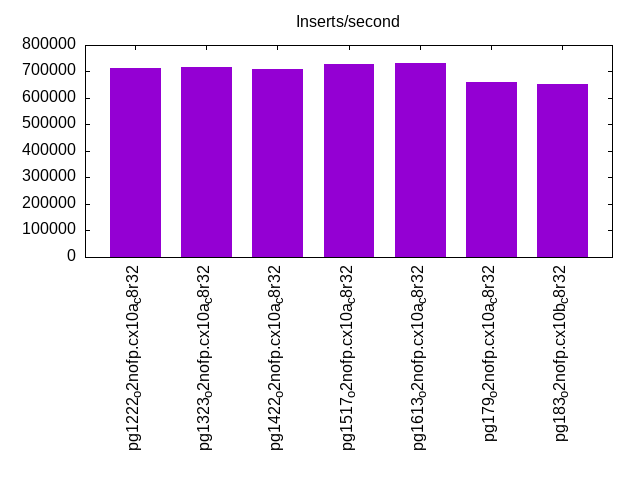
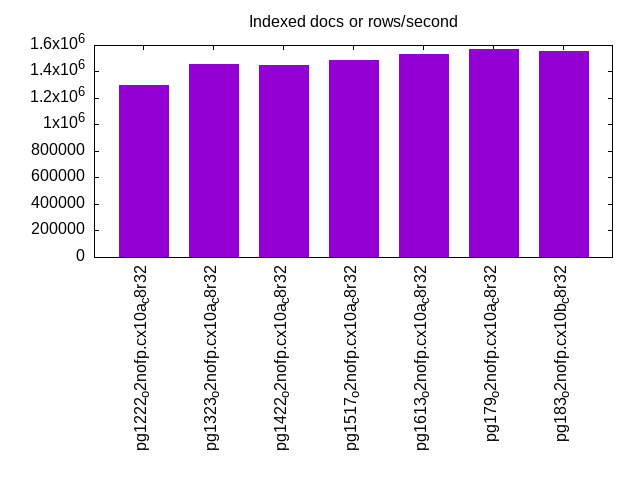
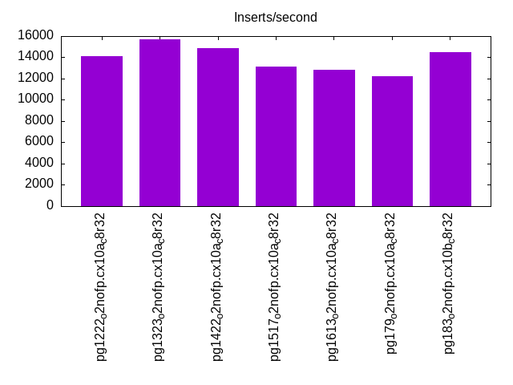
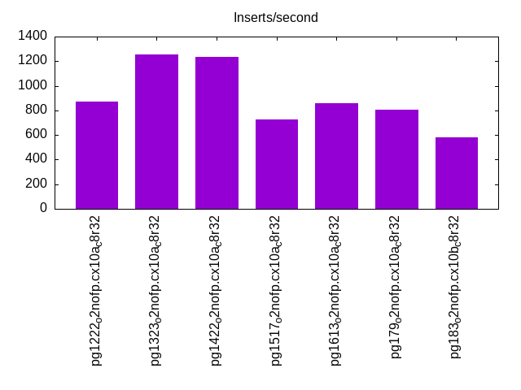
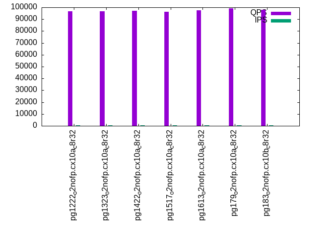
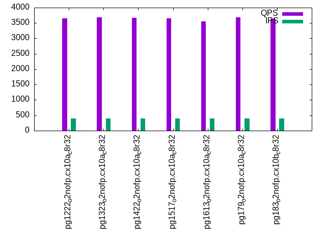
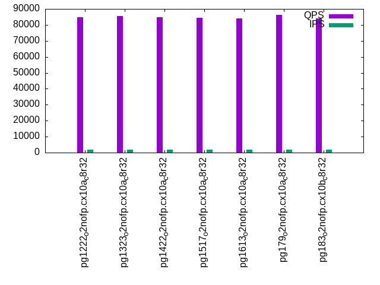
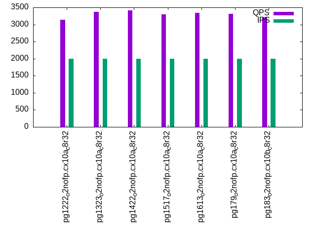
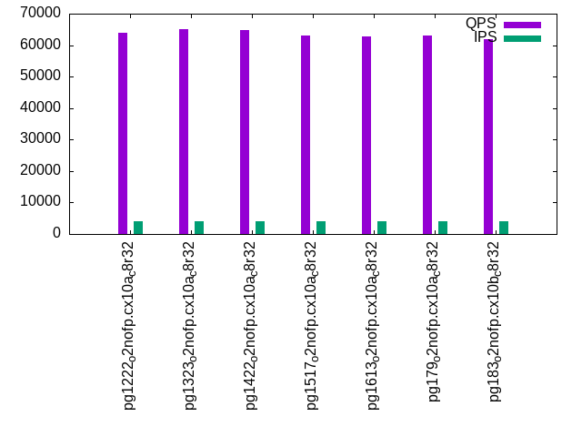
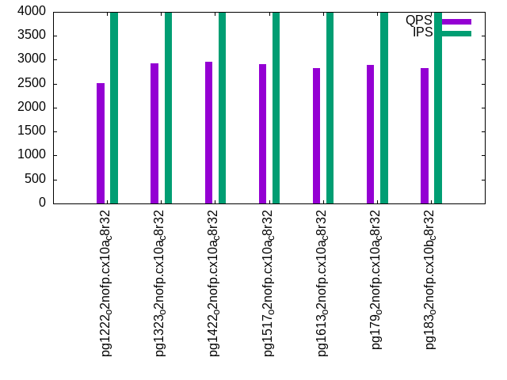

This is a report for the insert benchmark with 800M docs and 4 client(s). It is generated by scripts (bash, awk, sed) and Tufte might not be impressed. An overview of the insert benchmark is here and a short update is here. Below, by DBMS, I mean DBMS+version.config. An example is my8020.c10b40 where my means MySQL, 8020 is version 8.0.20 and c10b40 is the name for the configuration file.
The test server has 8 AMD cores, 32G RAM and an NVMe device for the database. The benchmark was run with 4 clients and there were 1 or 3 connections per client (1 for queries or inserts without rate limits, 1+1 for rate limited inserts+deletes). It uses 4 tables with a table per client. It loads 200M rows per table without secondary indexes, creates 3 secondary indexes per table, then inserts 4m+1m rows per table with a delete per insert to avoid growing the table. It then does 6 read+write tests for 1800s each that do queries as fast as possible with 100,100,500,500,1000,1000 inserts/s and the same for deletes/s per client concurrent with the queries. The database is IO-bound for most benchmark steps. Clients and the DBMS share one server.
The tested DBMS are:
The numbers are inserts/s for l.i0, l.i1 and l.i2, indexed docs (or rows) /s for l.x and queries/s for qr100, qp100 thru qr1000, qp1000" The values are the average rate over the entire test for inserts (IPS) and queries (QPS). The range of values for IPS and QPS is split into 3 parts: bottom 25%, middle 50%, top 25%. Values in the bottom 25% have a red background, values in the top 25% have a green background and values in the middle have no color. A gray background is used for values that can be ignored because the DBMS did not sustain the target insert rate. Red backgrounds are not used when the minimum value is within 80% of the max value.
| dbms | l.i0 | l.x | l.i1 | l.i2 | qr100 | qp100 | qr500 | qp500 | qr1000 | qp1000 |
|---|---|---|---|---|---|---|---|---|---|---|
| pg1222_o2nofp.cx10a_c8r32 | 712378 | 1300813 | 14147 | 872 | 96865 | 3661 | 84738 | 3140 | 63998 | 2512 |
| pg1323_o2nofp.cx10a_c8r32 | 718778 | 1457195 | 15686 | 1254 | 96893 | 3686 | 85543 | 3371 | 64987 | 2922 |
| pg1422_o2nofp.cx10a_c8r32 | 709220 | 1451906 | 14884 | 1238 | 96906 | 3675 | 84923 | 3409 | 64790 | 2954 |
| pg1517_o2nofp.cx10a_c8r32 | 729262 | 1484230 | 13169 | 726 | 96420 | 3660 | 84561 | 3304 | 63115 | 2904 |
| pg1613_o2nofp.cx10a_c8r32 | 733272 | 1529637 | 12810 | 856 | 97333 | 3548 | 83939 | 3343 | 62755 | 2823 |
| pg179_o2nofp.cx10a_c8r32 | 661157 | 1568628 | 12204 | 803 | 99169 | 3693 | 86227 | 3314 | 63175 | 2894 |
| pg183_o2nofp.cx10b_c8r32 | 653595 | 1556420 | 14506 | 582 | 97740 | 3633 | 84106 | 3206 | 62009 | 2819 |
This table has relative throughput, throughput for the DBMS relative to the DBMS in the first line, using the absolute throughput from the previous table. Values less than 0.95 have a yellow background. Values greater than 1.05 have a blue background.
| dbms | l.i0 | l.x | l.i1 | l.i2 | qr100 | qp100 | qr500 | qp500 | qr1000 | qp1000 |
|---|---|---|---|---|---|---|---|---|---|---|
| pg1222_o2nofp.cx10a_c8r32 | 1.00 | 1.00 | 1.00 | 1.00 | 1.00 | 1.00 | 1.00 | 1.00 | 1.00 | 1.00 |
| pg1323_o2nofp.cx10a_c8r32 | 1.01 | 1.12 | 1.11 | 1.44 | 1.00 | 1.01 | 1.01 | 1.07 | 1.02 | 1.16 |
| pg1422_o2nofp.cx10a_c8r32 | 1.00 | 1.12 | 1.05 | 1.42 | 1.00 | 1.00 | 1.00 | 1.09 | 1.01 | 1.18 |
| pg1517_o2nofp.cx10a_c8r32 | 1.02 | 1.14 | 0.93 | 0.83 | 1.00 | 1.00 | 1.00 | 1.05 | 0.99 | 1.16 |
| pg1613_o2nofp.cx10a_c8r32 | 1.03 | 1.18 | 0.91 | 0.98 | 1.00 | 0.97 | 0.99 | 1.06 | 0.98 | 1.12 |
| pg179_o2nofp.cx10a_c8r32 | 0.93 | 1.21 | 0.86 | 0.92 | 1.02 | 1.01 | 1.02 | 1.06 | 0.99 | 1.15 |
| pg183_o2nofp.cx10b_c8r32 | 0.92 | 1.20 | 1.03 | 0.67 | 1.01 | 0.99 | 0.99 | 1.02 | 0.97 | 1.12 |
This lists the average rate of inserts/s for the tests that do inserts concurrent with queries. For such tests the query rate is listed in the table above. The read+write tests are setup so that the insert rate should match the target rate every second. Cells that are not at least 95% of the target have a red background to indicate a failure to satisfy the target.
| dbms | qr100.L1 | qp100.L2 | qr500.L3 | qp500.L4 | qr1000.L5 | qp1000.L6 |
|---|---|---|---|---|---|---|
| pg1222_o2nofp.cx10a_c8r32 | 399 | 399 | 1996 | 1996 | 3993 | 3991 |
| pg1323_o2nofp.cx10a_c8r32 | 399 | 399 | 1996 | 1997 | 3989 | 3991 |
| pg1422_o2nofp.cx10a_c8r32 | 399 | 399 | 1997 | 1996 | 3991 | 3993 |
| pg1517_o2nofp.cx10a_c8r32 | 399 | 399 | 1996 | 1996 | 3993 | 3993 |
| pg1613_o2nofp.cx10a_c8r32 | 399 | 398 | 1996 | 1997 | 3989 | 3991 |
| pg179_o2nofp.cx10a_c8r32 | 399 | 399 | 1997 | 1996 | 3989 | 3993 |
| pg183_o2nofp.cx10b_c8r32 | 399 | 399 | 1996 | 1997 | 3991 | 3991 |
| target | 400 | 400 | 2000 | 2000 | 4000 | 4000 |
l.i0: load without secondary indexes. Graphs for performance per 1-second interval are here.
Average throughput:

Insert response time histogram: each cell has the percentage of responses that take <= the time in the header and max is the max response time in seconds. For the max column values in the top 25% of the range have a red background and in the bottom 25% of the range have a green background. The red background is not used when the min value is within 80% of the max value.
| dbms | 256us | 1ms | 4ms | 16ms | 64ms | 256ms | 1s | 4s | 16s | gt | max |
|---|---|---|---|---|---|---|---|---|---|---|---|
| pg1222_o2nofp.cx10a_c8r32 | 99.112 | 0.879 | 0.008 | 0.001 | nonzero | 0.075 | |||||
| pg1323_o2nofp.cx10a_c8r32 | 98.939 | 1.042 | 0.018 | 0.001 | nonzero | 0.081 | |||||
| pg1422_o2nofp.cx10a_c8r32 | 99.204 | 0.777 | 0.016 | 0.002 | nonzero | 0.081 | |||||
| pg1517_o2nofp.cx10a_c8r32 | 99.191 | 0.790 | 0.017 | 0.002 | nonzero | 0.077 | |||||
| pg1613_o2nofp.cx10a_c8r32 | 99.215 | 0.769 | 0.015 | 0.001 | nonzero | 0.079 | |||||
| pg179_o2nofp.cx10a_c8r32 | 96.971 | 2.953 | 0.073 | 0.003 | nonzero | 0.077 | |||||
| pg183_o2nofp.cx10b_c8r32 | 96.912 | 2.920 | 0.167 | 0.001 | nonzero | 0.135 |
Performance metrics for the DBMS listed above. Some are normalized by throughput, others are not. Legend for results is here.
ips qps rps rmbps wps wmbps rpq rkbpq wpi wkbpi csps cpups cspq cpupq dbgb1 dbgb2 rss maxop p50 p99 tag 712378 0 492 4.0 3344.8 299.8 0.001 0.006 0.005 0.431 55612 78.4 0.078 9 76.5 116.6 0.2 0.075 182005 166482 pg1222_o2nofp.cx10a_c8r32 718778 0 480 3.9 2803.7 298.3 0.001 0.006 0.004 0.425 55550 79.3 0.077 9 76.5 116.6 4.0 0.081 184153 146280 pg1323_o2nofp.cx10a_c8r32 709220 0 481 3.8 2760.5 293.9 0.001 0.005 0.004 0.424 54644 78.4 0.077 9 76.5 116.6 3.4 0.081 180179 149349 pg1422_o2nofp.cx10a_c8r32 729262 0 486 3.8 2832.4 303.6 0.001 0.005 0.004 0.426 54401 79.0 0.075 9 76.5 116.6 23.3 0.077 185349 147784 pg1517_o2nofp.cx10a_c8r32 733272 0 504 3.9 2829.2 302.3 0.001 0.006 0.004 0.422 54543 79.0 0.074 9 76.5 116.6 23.3 0.079 187070 160983 pg1613_o2nofp.cx10a_c8r32 661157 0 442 3.5 2560.5 273.9 0.001 0.005 0.004 0.424 56355 70.6 0.085 9 76.5 116.6 23.3 0.077 169277 140381 pg179_o2nofp.cx10a_c8r32 653595 0 427 3.4 2568.6 270.8 0.001 0.005 0.004 0.424 56352 70.3 0.086 9 76.5 116.6 23.2 0.135 169044 43695 pg183_o2nofp.cx10b_c8r32
Average values from iostat.
r/s rkB/s rrqm/s %rrqm r_await rareq-s w/s wkB/s wrqm/s %wrqm w_await wareq-s d/s dkB/s drqm/s %drqm d_await dareq-s f/s f_await aqu-sz %util 494.0 4114.1 0.030 0.229 0.222 10.57 3357.2 308062 242.1 6.614 0.474 95.82 3.125 2647.6 0.000 0.000 1.053 107.5 145.0 1.628 1.819 39.04 pg1222_o2nofp.cx10a_c8r32 482.3 3980.3 0.121 0.786 0.325 5.508 2813.7 306528 224.5 7.190 0.505 109.4 3.490 1697.2 0.000 0.000 1.038 83.14 140.5 1.671 1.614 38.87 pg1323_o2nofp.cx10a_c8r32 483.1 3871.1 0.172 0.353 0.264 8.906 2770.3 301970 238.3 7.235 0.443 109.6 3.212 893.6 0.000 0.000 0.957 50.83 140.0 1.539 1.452 35.21 pg1422_o2nofp.cx10a_c8r32 488.1 3914.8 0.023 0.201 0.317 8.329 2842.9 312015 222.0 6.807 0.468 110.2 0.758 1214.0 0.000 0.000 0.820 102.6 143.4 1.599 1.554 36.84 pg1517_o2nofp.cx10a_c8r32 505.8 4061.2 0.003 0.001 0.299 9.801 2839.6 310717 227.8 6.886 0.468 109.9 0.935 979.6 0.000 0.000 0.974 78.13 143.7 1.623 1.569 37.11 pg1613_o2nofp.cx10a_c8r32 444.0 3647.0 0.160 0.746 0.496 12.92 2568.8 281401 191.7 7.175 0.847 109.7 0.518 4974.2 0.000 0.000 0.717 747.9 130.3 2.572 2.386 45.58 pg179_o2nofp.cx10a_c8r32 428.7 3510.3 0.336 2.377 0.307 5.120 2576.9 278143 186.5 6.370 0.486 109.0 0.452 1051.4 0.000 0.000 0.883 217.4 129.7 1.692 1.474 34.55 pg183_o2nofp.cx10b_c8r32
l.x: create secondary indexes.
Average throughput:

Performance metrics for the DBMS listed above. Some are normalized by throughput, others are not. Legend for results is here.
ips qps rps rmbps wps wmbps rpq rkbpq wpi wkbpi csps cpups cspq cpupq dbgb1 dbgb2 rss maxop p50 p99 tag 1300813 0 4955 420.6 6104.1 543.1 0.004 0.331 0.005 0.427 13945 43.9 0.011 3 153.8 193.8 19.4 0.004 NA NA pg1222_o2nofp.cx10a_c8r32 1457195 0 5151 463.2 3552.1 426.1 0.004 0.326 0.002 0.299 9761 45.9 0.007 3 153.7 193.7 23.2 0.004 NA NA pg1323_o2nofp.cx10a_c8r32 1451906 0 5111 460.5 3532.3 422.6 0.004 0.325 0.002 0.298 9999 45.7 0.007 3 153.7 193.7 23.3 0.004 NA NA pg1422_o2nofp.cx10a_c8r32 1484230 0 5501 516.8 3997.7 479.7 0.004 0.357 0.003 0.331 10848 46.0 0.007 2 153.7 193.7 1.6 0.002 NA NA pg1517_o2nofp.cx10a_c8r32 1529637 0 4706 440.8 3730.3 445.4 0.003 0.295 0.002 0.298 9992 46.0 0.007 2 153.7 193.7 23.3 0.002 NA NA pg1613_o2nofp.cx10a_c8r32 1568628 0 4770 454.7 3846.7 463.9 0.003 0.297 0.002 0.303 10245 46.1 0.007 2 153.7 193.7 22.4 0.002 NA NA pg179_o2nofp.cx10a_c8r32 1556420 0 4478 441.0 3771.0 453.2 0.003 0.290 0.002 0.298 9936 46.2 0.006 2 153.7 193.7 23.1 0.005 NA NA pg183_o2nofp.cx10b_c8r32
Average values from iostat.
r/s rkB/s rrqm/s %rrqm r_await rareq-s w/s wkB/s wrqm/s %wrqm w_await wareq-s d/s dkB/s drqm/s %drqm d_await dareq-s f/s f_await aqu-sz %util 4975.8 431638 0.639 0.013 0.141 88.80 6124.8 559633 194.8 3.322 1.390 110.4 8.307 134991 0.000 0.000 1.008 1417.0 53.52 2.064 7.529 58.39 pg1222_o2nofp.cx10a_c8r32 5175.3 475823 0.041 0.001 0.134 88.68 3575.4 439206 141.3 3.003 0.406 123.5 5.683 104971 0.000 0.000 0.771 2867.1 38.57 1.701 2.313 48.66 pg1323_o2nofp.cx10a_c8r32 5134.9 472982 0.000 0.000 0.119 88.37 3560.5 436191 148.4 2.778 0.398 123.5 6.226 117394 0.000 0.000 0.823 1625.0 40.02 1.728 2.397 48.02 pg1422_o2nofp.cx10a_c8r32 5488.2 530676 0.411 0.013 0.121 92.53 4026.4 494766 143.5 2.577 0.402 123.5 3.734 87409.0 0.000 0.000 0.516 1744.1 40.53 1.933 2.580 49.16 pg1517_o2nofp.cx10a_c8r32 4724.3 452311 0.680 0.022 0.128 88.82 3755.8 459172 142.2 2.724 0.425 123.1 4.051 105247 0.000 0.000 0.528 2204.6 40.79 1.926 2.444 46.76 pg1613_o2nofp.cx10a_c8r32 4787.6 466728 0.044 0.001 0.128 90.88 3878.2 478930 135.0 2.929 0.442 123.7 5.697 136670 0.000 0.000 0.503 1778.7 39.97 1.838 2.560 49.97 pg179_o2nofp.cx10a_c8r32 4495.6 452641 0.000 0.000 0.139 93.20 3799.0 467528 126.3 2.557 0.494 123.7 3.842 93577.6 0.000 0.000 0.479 1138.9 40.51 1.975 2.826 49.12 pg183_o2nofp.cx10b_c8r32
l.i1: continue load after secondary indexes created with 50 inserts per transaction. Graphs for performance per 1-second interval are here.
Average throughput:

Insert response time histogram: each cell has the percentage of responses that take <= the time in the header and max is the max response time in seconds. For the max column values in the top 25% of the range have a red background and in the bottom 25% of the range have a green background. The red background is not used when the min value is within 80% of the max value.
| dbms | 256us | 1ms | 4ms | 16ms | 64ms | 256ms | 1s | 4s | 16s | gt | max |
|---|---|---|---|---|---|---|---|---|---|---|---|
| pg1222_o2nofp.cx10a_c8r32 | 0.005 | 74.536 | 25.458 | 0.001 | 0.082 | ||||||
| pg1323_o2nofp.cx10a_c8r32 | 1.452 | 90.656 | 7.890 | 0.002 | 0.077 | ||||||
| pg1422_o2nofp.cx10a_c8r32 | 3.034 | 90.138 | 6.825 | 0.003 | 0.086 | ||||||
| pg1517_o2nofp.cx10a_c8r32 | 0.393 | 91.034 | 8.569 | 0.004 | 0.081 | ||||||
| pg1613_o2nofp.cx10a_c8r32 | 1.038 | 91.955 | 7.006 | 0.001 | 0.081 | ||||||
| pg179_o2nofp.cx10a_c8r32 | 2.340 | 89.968 | 7.692 | 0.001 | 0.066 | ||||||
| pg183_o2nofp.cx10b_c8r32 | 0.667 | 86.353 | 12.974 | 0.005 | 0.077 |
Delete response time histogram: each cell has the percentage of responses that take <= the time in the header and max is the max response time in seconds. For the max column values in the top 25% of the range have a red background and in the bottom 25% of the range have a green background. The red background is not used when the min value is within 80% of the max value.
| dbms | 256us | 1ms | 4ms | 16ms | 64ms | 256ms | 1s | 4s | 16s | gt | max |
|---|---|---|---|---|---|---|---|---|---|---|---|
| pg1222_o2nofp.cx10a_c8r32 | 0.002 | 2.716 | 11.277 | 85.818 | 0.188 | 0.033 | |||||
| pg1323_o2nofp.cx10a_c8r32 | 0.002 | 2.574 | 10.704 | 82.759 | 3.961 | 0.030 | |||||
| pg1422_o2nofp.cx10a_c8r32 | 0.001 | 2.573 | 10.871 | 76.458 | 10.097 | 0.031 | |||||
| pg1517_o2nofp.cx10a_c8r32 | 0.002 | 2.493 | 10.417 | 70.303 | 16.785 | 0.033 | |||||
| pg1613_o2nofp.cx10a_c8r32 | 0.002 | 2.578 | 10.275 | 74.561 | 12.584 | 0.037 | |||||
| pg179_o2nofp.cx10a_c8r32 | 0.002 | 2.427 | 9.534 | 70.906 | 17.131 | 0.034 | |||||
| pg183_o2nofp.cx10b_c8r32 | 0.002 | 2.420 | 9.877 | 80.480 | 7.222 | 0.037 |
Performance metrics for the DBMS listed above. Some are normalized by throughput, others are not. Legend for results is here.
ips qps rps rmbps wps wmbps rpq rkbpq wpi wkbpi csps cpups cspq cpupq dbgb1 dbgb2 rss maxop p50 p99 tag 14147 0 16023 128.4 18303.1 315.9 1.133 9.297 1.294 22.864 38085 47.7 2.692 270 156.4 196.4 23.4 0.082 3649 2200 pg1222_o2nofp.cx10a_c8r32 15686 0 18284 152.1 19389.7 345.3 1.166 9.930 1.236 22.542 41751 55.7 2.662 284 156.3 196.3 23.4 0.077 4300 2399 pg1323_o2nofp.cx10a_c8r32 14884 0 17122 137.8 18926.6 329.5 1.150 9.483 1.272 22.669 39303 55.0 2.641 296 156.3 196.3 23.3 0.086 3650 2000 pg1422_o2nofp.cx10a_c8r32 13169 0 15287 121.8 16944.8 294.0 1.161 9.469 1.287 22.862 35272 52.9 2.678 321 156.3 196.3 23.3 0.081 2400 1850 pg1517_o2nofp.cx10a_c8r32 12810 0 14820 118.1 16267.5 283.1 1.157 9.442 1.270 22.629 33842 50.1 2.642 313 156.3 196.3 23.3 0.081 4049 2550 pg1613_o2nofp.cx10a_c8r32 12204 0 13994 111.5 15532.9 270.4 1.147 9.356 1.273 22.686 31734 48.6 2.600 319 156.3 196.3 23.3 0.066 3550 2600 pg179_o2nofp.cx10a_c8r32 14506 0 17037 136.3 18885.4 327.8 1.174 9.623 1.302 23.141 38458 55.6 2.651 307 156.3 196.3 23.3 0.077 3750 1649 pg183_o2nofp.cx10b_c8r32
Average values from iostat.
r/s rkB/s rrqm/s %rrqm r_await rareq-s w/s wkB/s wrqm/s %wrqm w_await wareq-s d/s dkB/s drqm/s %drqm d_await dareq-s f/s f_await aqu-sz %util 16026.9 131569 0.000 0.000 0.210 8.222 18380.2 324515 277.9 1.977 1.064 24.06 2.339 4394.8 0.000 0.000 1.540 345.0 146.8 3.470 23.42 98.25 pg1222_o2nofp.cx10a_c8r32 18265.5 155661 0.000 0.000 0.122 8.627 19478.8 354700 351.6 2.142 0.567 22.44 2.312 4143.6 0.000 0.000 1.113 371.8 163.0 2.334 13.36 86.27 pg1323_o2nofp.cx10a_c8r32 17073.8 140761 0.002 0.000 0.113 8.270 19008.0 338187 269.2 1.698 0.522 21.15 2.236 2262.0 0.000 0.000 1.018 269.8 160.3 2.228 11.95 84.03 pg1422_o2nofp.cx10a_c8r32 15235.9 124283 0.002 0.000 0.122 8.142 17008.8 301604 298.3 2.030 0.565 20.23 0.218 2815.6 0.000 0.000 0.141 421.6 137.3 2.615 11.97 79.95 pg1517_o2nofp.cx10a_c8r32 14753.4 120425 0.000 0.000 0.107 8.148 16325.9 290242 278.9 1.721 0.484 20.63 0.167 2022.4 0.000 0.000 0.125 413.7 132.5 2.488 10.56 73.75 pg1613_o2nofp.cx10a_c8r32 13929.0 113666 0.002 0.000 0.112 8.147 15584.2 276976 230.3 1.707 0.517 20.34 0.169 2285.8 0.000 0.000 0.068 422.6 125.2 2.650 10.61 73.64 pg179_o2nofp.cx10a_c8r32 16988.2 139203 0.000 0.000 0.146 8.204 18964.8 336434 219.3 1.522 0.720 21.48 0.245 3337.7 0.000 0.000 0.065 424.9 151.5 2.732 16.15 89.07 pg183_o2nofp.cx10b_c8r32
l.i2: continue load after secondary indexes created with 5 inserts per transaction. Graphs for performance per 1-second interval are here.
Average throughput:

Insert response time histogram: each cell has the percentage of responses that take <= the time in the header and max is the max response time in seconds. For the max column values in the top 25% of the range have a red background and in the bottom 25% of the range have a green background. The red background is not used when the min value is within 80% of the max value.
| dbms | 256us | 1ms | 4ms | 16ms | 64ms | 256ms | 1s | 4s | 16s | gt | max |
|---|---|---|---|---|---|---|---|---|---|---|---|
| pg1222_o2nofp.cx10a_c8r32 | 0.001 | 60.941 | 37.156 | 1.900 | 0.002 | 0.022 | |||||
| pg1323_o2nofp.cx10a_c8r32 | 0.002 | 64.933 | 33.816 | 1.248 | 0.002 | 0.023 | |||||
| pg1422_o2nofp.cx10a_c8r32 | 0.001 | 54.775 | 43.900 | 1.323 | 0.002 | 0.020 | |||||
| pg1517_o2nofp.cx10a_c8r32 | 36.309 | 62.342 | 1.348 | 0.001 | 0.022 | ||||||
| pg1613_o2nofp.cx10a_c8r32 | 0.049 | 38.636 | 57.776 | 3.488 | 0.052 | 0.043 | |||||
| pg179_o2nofp.cx10a_c8r32 | 0.001 | 42.850 | 56.171 | 0.978 | 0.001 | 0.022 | |||||
| pg183_o2nofp.cx10b_c8r32 | 31.583 | 67.636 | 0.780 | 0.001 | 0.024 |
Delete response time histogram: each cell has the percentage of responses that take <= the time in the header and max is the max response time in seconds. For the max column values in the top 25% of the range have a red background and in the bottom 25% of the range have a green background. The red background is not used when the min value is within 80% of the max value.
| dbms | 256us | 1ms | 4ms | 16ms | 64ms | 256ms | 1s | 4s | 16s | gt | max |
|---|---|---|---|---|---|---|---|---|---|---|---|
| pg1222_o2nofp.cx10a_c8r32 | 63.155 | 36.845 | 0.001 | 0.075 | |||||||
| pg1323_o2nofp.cx10a_c8r32 | 54.549 | 45.451 | 0.001 | 0.075 | |||||||
| pg1422_o2nofp.cx10a_c8r32 | 49.758 | 50.241 | 0.001 | 0.076 | |||||||
| pg1517_o2nofp.cx10a_c8r32 | 23.806 | 76.194 | 0.001 | 0.087 | |||||||
| pg1613_o2nofp.cx10a_c8r32 | 0.805 | 6.863 | 8.617 | 12.178 | 71.536 | 0.001 | 0.089 | ||||
| pg179_o2nofp.cx10a_c8r32 | 0.052 | 99.948 | 0.001 | 0.072 | |||||||
| pg183_o2nofp.cx10b_c8r32 | 3.096 | 96.904 | 0.001 | 0.091 |
Performance metrics for the DBMS listed above. Some are normalized by throughput, others are not. Legend for results is here.
ips qps rps rmbps wps wmbps rpq rkbpq wpi wkbpi csps cpups cspq cpupq dbgb1 dbgb2 rss maxop p50 p99 tag 872 0 963 8.2 1498.5 22.0 1.104 9.617 1.718 25.780 6544 39.0 7.503 3577 157.0 197.1 23.4 0.022 180 155 pg1222_o2nofp.cx10a_c8r32 1254 0 1370 11.0 2000.5 30.3 1.092 8.971 1.595 24.718 9314 51.4 7.426 3278 157.0 197.0 23.4 0.023 310 280 pg1323_o2nofp.cx10a_c8r32 1238 0 1359 10.8 1978.3 29.7 1.097 8.903 1.598 24.599 8640 51.4 6.978 3321 157.0 197.0 23.3 0.020 310 280 pg1422_o2nofp.cx10a_c8r32 726 0 788 6.3 1209.5 18.4 1.085 8.914 1.667 26.013 5029 39.8 6.928 4387 157.0 197.0 23.3 0.022 165 150 pg1517_o2nofp.cx10a_c8r32 856 0 1117 18.2 1697.2 28.0 1.305 21.733 1.983 33.540 6072 38.3 7.094 3580 156.9 197.0 19.8 0.043 295 270 pg1613_o2nofp.cx10a_c8r32 803 0 892 7.1 1328.8 19.8 1.110 9.050 1.654 25.234 4997 41.5 6.221 4133 157.0 197.0 23.3 0.022 155 125 pg179_o2nofp.cx10a_c8r32 582 0 624 4.9 951.8 14.8 1.072 8.705 1.635 26.080 3622 43.8 6.223 6020 157.0 197.0 23.3 0.024 145 135 pg183_o2nofp.cx10b_c8r32
Average values from iostat.
r/s rkB/s rrqm/s %rrqm r_await rareq-s w/s wkB/s wrqm/s %wrqm w_await wareq-s d/s dkB/s drqm/s %drqm d_await dareq-s f/s f_await aqu-sz %util 963.1 8386.9 0.000 0.000 0.106 8.637 1485.1 22369.9 20.22 1.963 0.147 15.91 2.038 186.6 0.000 0.000 0.620 14.83 13.45 3.130 0.338 12.68 pg1222_o2nofp.cx10a_c8r32 1370.3 11255.0 0.077 0.005 0.087 8.201 2001.1 31013.3 25.82 1.167 0.144 15.56 2.037 294.8 0.000 0.000 0.626 20.60 17.17 3.083 0.461 16.76 pg1323_o2nofp.cx10a_c8r32 1359.3 11028.2 0.000 0.000 0.088 8.113 1979.4 30476.3 21.85 1.034 0.139 15.47 2.029 199.3 0.000 0.000 0.607 19.31 16.82 3.049 0.449 16.81 pg1422_o2nofp.cx10a_c8r32 787.7 6470.3 0.000 0.000 0.093 8.233 1209.9 18885.8 19.36 1.463 0.114 15.64 0.027 105.1 0.000 0.000 0.008 11.24 11.06 3.107 0.246 11.33 pg1517_o2nofp.cx10a_c8r32 1117.1 18612.2 0.001 0.000 0.109 10.60 1697.7 28713.5 21.14 1.316 0.191 16.12 0.036 117.1 0.000 0.000 0.016 10.19 23.51 3.138 0.843 17.37 pg1613_o2nofp.cx10a_c8r32 891.5 7269.1 0.000 0.000 0.086 8.145 1328.9 20269.8 16.52 1.400 0.130 15.27 0.002 0.197 0.000 0.000 0.005 0.339 12.08 3.152 0.286 12.12 pg179_o2nofp.cx10a_c8r32 623.8 5066.4 0.000 0.000 0.085 8.120 951.7 15181.3 10.88 1.199 0.117 17.11 0.007 62.21 0.000 0.000 0.004 9.959 8.801 3.176 0.188 9.225 pg183_o2nofp.cx10b_c8r32
qr100.L1: range queries with 100 insert/s per client. Graphs for performance per 1-second interval are here.
Average throughput:

Query response time histogram: each cell has the percentage of responses that take <= the time in the header and max is the max response time in seconds. For max values in the top 25% of the range have a red background and in the bottom 25% of the range have a green background. The red background is not used when the min value is within 80% of the max value.
| dbms | 256us | 1ms | 4ms | 16ms | 64ms | 256ms | 1s | 4s | 16s | gt | max |
|---|---|---|---|---|---|---|---|---|---|---|---|
| pg1222_o2nofp.cx10a_c8r32 | 99.991 | 0.008 | nonzero | nonzero | 0.006 | ||||||
| pg1323_o2nofp.cx10a_c8r32 | 99.990 | 0.010 | nonzero | 0.004 | |||||||
| pg1422_o2nofp.cx10a_c8r32 | 99.989 | 0.011 | nonzero | nonzero | 0.010 | ||||||
| pg1517_o2nofp.cx10a_c8r32 | 99.989 | 0.011 | nonzero | nonzero | nonzero | nonzero | 0.454 | ||||
| pg1613_o2nofp.cx10a_c8r32 | 99.988 | 0.012 | nonzero | nonzero | 0.009 | ||||||
| pg179_o2nofp.cx10a_c8r32 | 99.984 | 0.014 | 0.001 | nonzero | 0.010 | ||||||
| pg183_o2nofp.cx10b_c8r32 | 99.989 | 0.011 | nonzero | nonzero | 0.010 |
Insert response time histogram: each cell has the percentage of responses that take <= the time in the header and max is the max response time in seconds. For max values in the top 25% of the range have a red background and in the bottom 25% of the range have a green background. The red background is not used when the min value is within 80% of the max value.
| dbms | 256us | 1ms | 4ms | 16ms | 64ms | 256ms | 1s | 4s | 16s | gt | max |
|---|---|---|---|---|---|---|---|---|---|---|---|
| pg1222_o2nofp.cx10a_c8r32 | 98.514 | 1.486 | 0.049 | ||||||||
| pg1323_o2nofp.cx10a_c8r32 | 99.875 | 0.125 | 0.023 | ||||||||
| pg1422_o2nofp.cx10a_c8r32 | 99.569 | 0.431 | 0.029 | ||||||||
| pg1517_o2nofp.cx10a_c8r32 | 99.396 | 0.604 | 0.035 | ||||||||
| pg1613_o2nofp.cx10a_c8r32 | 0.007 | 99.083 | 0.910 | 0.026 | |||||||
| pg179_o2nofp.cx10a_c8r32 | 98.743 | 1.257 | 0.041 | ||||||||
| pg183_o2nofp.cx10b_c8r32 | 99.340 | 0.660 | 0.031 |
Delete response time histogram: each cell has the percentage of responses that take <= the time in the header and max is the max response time in seconds. For max values in the top 25% of the range have a red background and in the bottom 25% of the range have a green background. The red background is not used when the min value is within 80% of the max value.
| dbms | 256us | 1ms | 4ms | 16ms | 64ms | 256ms | 1s | 4s | 16s | gt | max |
|---|---|---|---|---|---|---|---|---|---|---|---|
| pg1222_o2nofp.cx10a_c8r32 | 0.021 | 72.451 | 27.271 | 0.257 | 0.007 | ||||||
| pg1323_o2nofp.cx10a_c8r32 | 0.007 | 67.521 | 32.444 | 0.028 | 0.005 | ||||||
| pg1422_o2nofp.cx10a_c8r32 | 0.090 | 74.222 | 25.674 | 0.014 | 0.005 | ||||||
| pg1517_o2nofp.cx10a_c8r32 | 0.028 | 71.368 | 28.549 | 0.049 | 0.007 | 0.020 | |||||
| pg1613_o2nofp.cx10a_c8r32 | 0.076 | 73.833 | 26.062 | 0.028 | 0.005 | ||||||
| pg179_o2nofp.cx10a_c8r32 | 0.090 | 67.833 | 32.062 | 0.014 | 0.005 | ||||||
| pg183_o2nofp.cx10b_c8r32 | 0.007 | 66.042 | 33.951 | 0.004 |
Performance metrics for the DBMS listed above. Some are normalized by throughput, others are not. Legend for results is here.
ips qps rps rmbps wps wmbps rpq rkbpq wpi wkbpi csps cpups cspq cpupq dbgb1 dbgb2 rss maxop p50 p99 tag 399 96865 467 3.8 113.0 5.9 0.005 0.041 0.283 15.151 370484 42.7 3.825 35 157.1 197.1 23.4 0.006 24222 23836 pg1222_o2nofp.cx10a_c8r32 399 96893 463 3.7 236.3 7.2 0.005 0.039 0.592 18.536 370739 42.1 3.826 35 157.0 197.1 23.4 0.004 24653 23949 pg1323_o2nofp.cx10a_c8r32 399 96906 468 3.8 243.6 7.3 0.005 0.040 0.610 18.646 370414 41.5 3.822 34 157.0 197.0 23.3 0.010 24222 23805 pg1422_o2nofp.cx10a_c8r32 399 96420 465 3.7 239.7 7.2 0.005 0.040 0.600 18.565 368480 42.1 3.822 35 157.0 197.0 23.3 0.454 24237 21997 pg1517_o2nofp.cx10a_c8r32 399 97333 461 3.7 242.8 7.3 0.005 0.039 0.608 18.623 372292 41.7 3.825 34 156.9 197.0 23.3 0.009 24237 23853 pg1613_o2nofp.cx10a_c8r32 399 99169 485 3.9 264.2 7.5 0.005 0.040 0.662 19.198 379026 41.8 3.822 34 157.0 197.1 23.3 0.010 24925 24430 pg179_o2nofp.cx10a_c8r32 399 97740 457 3.7 256.7 7.4 0.005 0.038 0.643 19.000 373524 41.6 3.822 34 157.0 197.0 23.3 0.010 24509 22941 pg183_o2nofp.cx10b_c8r32
Average values from iostat.
r/s rkB/s rrqm/s %rrqm r_await rareq-s w/s wkB/s wrqm/s %wrqm w_await wareq-s d/s dkB/s drqm/s %drqm d_await dareq-s f/s f_await aqu-sz %util 455.1 3833.3 0.000 0.000 0.128 8.417 113.1 6050.3 10.31 8.911 0.426 57.93 2.000 9.994 0.000 0.000 0.711 4.997 6.741 2.200 0.119 3.766 pg1222_o2nofp.cx10a_c8r32 451.5 3689.3 0.000 0.000 0.095 8.171 236.9 7405.7 10.98 7.936 0.294 52.51 2.000 9.994 0.000 0.000 0.725 4.997 6.622 1.782 0.095 3.938 pg1323_o2nofp.cx10a_c8r32 455.5 3720.9 0.000 0.000 0.114 8.169 244.1 7453.4 8.837 6.391 0.306 51.60 1.999 10.39 0.000 0.000 0.809 5.197 7.170 1.719 0.106 3.554 pg1422_o2nofp.cx10a_c8r32 453.7 3737.8 0.000 0.000 0.105 8.238 240.3 7421.2 8.869 6.430 0.311 52.78 0.001 0.002 0.000 0.000 0.003 0.011 7.084 1.867 0.101 3.784 pg1517_o2nofp.cx10a_c8r32 448.8 3666.0 0.000 0.000 0.105 8.168 243.3 7440.3 7.226 5.386 0.345 52.70 0.001 0.002 0.000 0.000 0.000 0.011 6.935 1.983 0.104 4.063 pg1613_o2nofp.cx10a_c8r32 475.0 3893.4 0.000 0.000 0.100 8.196 264.8 7674.6 8.307 5.762 0.321 50.88 0.001 0.002 0.000 0.000 0.003 0.011 6.170 1.933 0.104 3.820 pg179_o2nofp.cx10a_c8r32 445.0 3663.5 0.000 0.000 0.104 8.232 257.3 7595.5 5.555 4.160 0.324 52.35 0.001 9.130 0.000 0.000 0.003 45.65 5.989 2.008 0.100 3.591 pg183_o2nofp.cx10b_c8r32
qp100.L2: point queries with 100 insert/s per client. Graphs for performance per 1-second interval are here.
Average throughput:

Query response time histogram: each cell has the percentage of responses that take <= the time in the header and max is the max response time in seconds. For max values in the top 25% of the range have a red background and in the bottom 25% of the range have a green background. The red background is not used when the min value is within 80% of the max value.
| dbms | 256us | 1ms | 4ms | 16ms | 64ms | 256ms | 1s | 4s | 16s | gt | max |
|---|---|---|---|---|---|---|---|---|---|---|---|
| pg1222_o2nofp.cx10a_c8r32 | nonzero | 36.633 | 63.250 | 0.117 | nonzero | 0.019 | |||||
| pg1323_o2nofp.cx10a_c8r32 | nonzero | 37.506 | 62.402 | 0.092 | nonzero | 0.025 | |||||
| pg1422_o2nofp.cx10a_c8r32 | nonzero | 38.590 | 61.274 | 0.134 | 0.001 | nonzero | 0.244 | ||||
| pg1517_o2nofp.cx10a_c8r32 | nonzero | 36.299 | 63.625 | 0.075 | nonzero | 0.024 | |||||
| pg1613_o2nofp.cx10a_c8r32 | nonzero | 34.896 | 64.867 | 0.191 | 0.046 | nonzero | nonzero | 0.851 | |||
| pg179_o2nofp.cx10a_c8r32 | nonzero | 37.891 | 62.029 | 0.080 | nonzero | 0.026 | |||||
| pg183_o2nofp.cx10b_c8r32 | nonzero | 36.222 | 63.655 | 0.122 | nonzero | nonzero | nonzero | 0.448 |
Insert response time histogram: each cell has the percentage of responses that take <= the time in the header and max is the max response time in seconds. For max values in the top 25% of the range have a red background and in the bottom 25% of the range have a green background. The red background is not used when the min value is within 80% of the max value.
| dbms | 256us | 1ms | 4ms | 16ms | 64ms | 256ms | 1s | 4s | 16s | gt | max |
|---|---|---|---|---|---|---|---|---|---|---|---|
| pg1222_o2nofp.cx10a_c8r32 | 97.097 | 2.903 | 0.029 | ||||||||
| pg1323_o2nofp.cx10a_c8r32 | 96.833 | 3.167 | 0.031 | ||||||||
| pg1422_o2nofp.cx10a_c8r32 | 96.521 | 3.444 | 0.035 | 0.203 | |||||||
| pg1517_o2nofp.cx10a_c8r32 | 98.153 | 1.847 | 0.028 | ||||||||
| pg1613_o2nofp.cx10a_c8r32 | 96.708 | 1.812 | 1.458 | 0.021 | 0.684 | ||||||
| pg179_o2nofp.cx10a_c8r32 | 97.069 | 2.903 | 0.028 | 0.087 | |||||||
| pg183_o2nofp.cx10b_c8r32 | 95.292 | 4.708 | 0.039 |
Delete response time histogram: each cell has the percentage of responses that take <= the time in the header and max is the max response time in seconds. For max values in the top 25% of the range have a red background and in the bottom 25% of the range have a green background. The red background is not used when the min value is within 80% of the max value.
| dbms | 256us | 1ms | 4ms | 16ms | 64ms | 256ms | 1s | 4s | 16s | gt | max |
|---|---|---|---|---|---|---|---|---|---|---|---|
| pg1222_o2nofp.cx10a_c8r32 | 11.514 | 86.528 | 1.958 | 0.009 | |||||||
| pg1323_o2nofp.cx10a_c8r32 | 5.278 | 93.236 | 1.486 | 0.010 | |||||||
| pg1422_o2nofp.cx10a_c8r32 | 7.590 | 91.910 | 0.444 | 0.056 | 0.054 | ||||||
| pg1517_o2nofp.cx10a_c8r32 | 3.382 | 95.083 | 1.535 | 0.014 | |||||||
| pg1613_o2nofp.cx10a_c8r32 | 7.118 | 91.993 | 0.819 | 0.035 | 0.021 | 0.014 | 0.668 | ||||
| pg179_o2nofp.cx10a_c8r32 | 4.576 | 94.104 | 1.319 | 0.015 | |||||||
| pg183_o2nofp.cx10b_c8r32 | 7.194 | 92.132 | 0.646 | 0.028 | 0.321 |
Performance metrics for the DBMS listed above. Some are normalized by throughput, others are not. Legend for results is here.
ips qps rps rmbps wps wmbps rpq rkbpq wpi wkbpi csps cpups cspq cpupq dbgb1 dbgb2 rss maxop p50 p99 tag 399 3661 45055 354.9 1537.2 17.0 12.308 99.285 3.850 43.683 100371 11.1 27.419 243 157.2 197.2 23.4 0.019 944 576 pg1222_o2nofp.cx10a_c8r32 399 3686 45504 355.8 1403.4 16.0 12.347 98.868 3.515 41.090 101407 10.9 27.515 237 157.1 197.1 23.4 0.025 928 592 pg1323_o2nofp.cx10a_c8r32 399 3675 45096 352.8 1396.7 15.9 12.271 98.302 3.500 40.923 101166 11.0 27.528 239 157.0 197.1 23.3 0.244 944 528 pg1422_o2nofp.cx10a_c8r32 399 3660 45062 352.4 1394.9 16.0 12.314 98.595 3.493 40.906 100263 11.8 27.398 258 157.1 196.5 23.3 0.024 928 592 pg1517_o2nofp.cx10a_c8r32 398 3548 43829 342.8 1387.1 15.9 12.351 98.935 3.482 40.752 98076 11.5 27.639 259 156.9 196.8 23.3 0.851 912 80 pg1613_o2nofp.cx10a_c8r32 399 3693 45368 354.8 1373.5 15.8 12.284 98.372 3.441 40.484 100926 10.9 27.328 236 157.1 197.1 23.3 0.026 928 624 pg179_o2nofp.cx10a_c8r32 399 3633 44709 349.7 1377.6 15.8 12.306 98.565 3.452 40.509 99975 11.8 27.518 260 157.0 197.1 23.3 0.448 944 560 pg183_o2nofp.cx10b_c8r32
Average values from iostat.
r/s rkB/s rrqm/s %rrqm r_await rareq-s w/s wkB/s wrqm/s %wrqm w_await wareq-s d/s dkB/s drqm/s %drqm d_await dareq-s f/s f_await aqu-sz %util 45098.1 363800 0.000 0.000 0.070 8.066 1521.0 17315.0 13.66 1.392 0.053 13.31 2.000 10.10 0.000 0.000 0.532 4.938 7.112 1.917 3.110 99.66 pg1222_o2nofp.cx10a_c8r32 45547.3 364723 0.000 0.000 0.070 8.010 1390.9 16310.9 14.07 1.432 0.051 13.40 2.001 10.01 0.000 0.000 0.587 5.002 7.407 1.701 3.109 99.68 pg1323_o2nofp.cx10a_c8r32 45137.5 361597 0.213 0.001 0.070 8.011 1384.4 16238.2 12.70 1.306 0.045 13.43 2.001 10.41 0.000 0.000 0.596 5.203 7.647 1.645 3.066 99.27 pg1422_o2nofp.cx10a_c8r32 45105.1 361150 0.000 0.000 0.070 8.008 1383.2 16244.3 12.71 1.297 0.047 13.40 0.025 365.1 0.000 0.000 0.004 42.46 7.325 1.714 3.063 99.62 pg1517_o2nofp.cx10a_c8r32 43866.6 351375 0.117 0.000 0.070 8.012 1374.3 16137.7 11.31 1.185 0.049 13.58 0.006 81.94 0.000 0.000 0.004 45.62 7.478 1.676 2.995 97.88 pg1613_o2nofp.cx10a_c8r32 45409.6 363642 0.000 0.000 0.070 8.010 1361.3 16064.2 11.42 1.164 0.048 13.43 0.001 0.002 0.000 0.000 0.003 0.011 7.525 1.780 3.102 99.67 pg179_o2nofp.cx10a_c8r32 44748.1 358403 0.277 0.001 0.070 8.010 1365.9 16077.5 8.214 0.838 0.053 13.42 0.001 0.002 0.000 0.000 0.003 0.011 7.685 1.829 3.054 99.36 pg183_o2nofp.cx10b_c8r32
qr500.L3: range queries with 500 insert/s per client. Graphs for performance per 1-second interval are here.
Average throughput:

Query response time histogram: each cell has the percentage of responses that take <= the time in the header and max is the max response time in seconds. For max values in the top 25% of the range have a red background and in the bottom 25% of the range have a green background. The red background is not used when the min value is within 80% of the max value.
| dbms | 256us | 1ms | 4ms | 16ms | 64ms | 256ms | 1s | 4s | 16s | gt | max |
|---|---|---|---|---|---|---|---|---|---|---|---|
| pg1222_o2nofp.cx10a_c8r32 | 99.956 | 0.041 | 0.003 | nonzero | nonzero | 0.040 | |||||
| pg1323_o2nofp.cx10a_c8r32 | 99.958 | 0.039 | 0.002 | nonzero | nonzero | 0.037 | |||||
| pg1422_o2nofp.cx10a_c8r32 | 99.963 | 0.036 | 0.002 | nonzero | nonzero | 0.026 | |||||
| pg1517_o2nofp.cx10a_c8r32 | 99.954 | 0.043 | 0.003 | nonzero | nonzero | 0.032 | |||||
| pg1613_o2nofp.cx10a_c8r32 | 99.959 | 0.039 | 0.001 | nonzero | nonzero | 0.033 | |||||
| pg179_o2nofp.cx10a_c8r32 | 99.960 | 0.038 | 0.002 | nonzero | nonzero | 0.034 | |||||
| pg183_o2nofp.cx10b_c8r32 | 99.960 | 0.037 | 0.002 | nonzero | nonzero | 0.031 |
Insert response time histogram: each cell has the percentage of responses that take <= the time in the header and max is the max response time in seconds. For max values in the top 25% of the range have a red background and in the bottom 25% of the range have a green background. The red background is not used when the min value is within 80% of the max value.
| dbms | 256us | 1ms | 4ms | 16ms | 64ms | 256ms | 1s | 4s | 16s | gt | max |
|---|---|---|---|---|---|---|---|---|---|---|---|
| pg1222_o2nofp.cx10a_c8r32 | 0.004 | 87.969 | 12.025 | 0.001 | 0.065 | ||||||
| pg1323_o2nofp.cx10a_c8r32 | 0.003 | 97.540 | 2.457 | 0.038 | |||||||
| pg1422_o2nofp.cx10a_c8r32 | 0.010 | 99.204 | 0.786 | 0.028 | |||||||
| pg1517_o2nofp.cx10a_c8r32 | 0.001 | 96.825 | 3.172 | 0.001 | 0.065 | ||||||
| pg1613_o2nofp.cx10a_c8r32 | 0.004 | 99.231 | 0.765 | 0.041 | |||||||
| pg179_o2nofp.cx10a_c8r32 | 0.003 | 97.340 | 2.657 | 0.040 | |||||||
| pg183_o2nofp.cx10b_c8r32 | 0.003 | 98.521 | 1.476 | 0.042 |
Delete response time histogram: each cell has the percentage of responses that take <= the time in the header and max is the max response time in seconds. For max values in the top 25% of the range have a red background and in the bottom 25% of the range have a green background. The red background is not used when the min value is within 80% of the max value.
| dbms | 256us | 1ms | 4ms | 16ms | 64ms | 256ms | 1s | 4s | 16s | gt | max |
|---|---|---|---|---|---|---|---|---|---|---|---|
| pg1222_o2nofp.cx10a_c8r32 | 31.910 | 68.061 | 0.029 | 0.035 | |||||||
| pg1323_o2nofp.cx10a_c8r32 | 25.906 | 74.047 | 0.047 | 0.038 | |||||||
| pg1422_o2nofp.cx10a_c8r32 | 34.462 | 65.535 | 0.003 | 0.026 | |||||||
| pg1517_o2nofp.cx10a_c8r32 | 23.582 | 76.353 | 0.065 | 0.037 | |||||||
| pg1613_o2nofp.cx10a_c8r32 | 28.814 | 71.183 | 0.003 | 0.019 | |||||||
| pg179_o2nofp.cx10a_c8r32 | 23.562 | 76.340 | 0.097 | 0.038 | |||||||
| pg183_o2nofp.cx10b_c8r32 | 29.811 | 70.174 | 0.015 | 0.022 |
Performance metrics for the DBMS listed above. Some are normalized by throughput, others are not. Legend for results is here.
ips qps rps rmbps wps wmbps rpq rkbpq wpi wkbpi csps cpups cspq cpupq dbgb1 dbgb2 rss maxop p50 p99 tag 1996 84738 2639 21.9 2432.8 40.9 0.031 0.265 1.219 20.993 323455 48.9 3.817 46 157.5 197.5 23.4 0.040 21390 18702 pg1222_o2nofp.cx10a_c8r32 1996 85543 2609 20.9 2415.3 41.2 0.030 0.250 1.210 21.142 325119 48.5 3.801 45 157.4 197.4 23.4 0.037 21500 19806 pg1323_o2nofp.cx10a_c8r32 1997 84923 2631 21.1 2406.2 40.4 0.031 0.255 1.205 20.718 324376 48.2 3.820 45 157.2 197.3 18.7 0.026 21182 19902 pg1422_o2nofp.cx10a_c8r32 1996 84561 2623 21.5 2417.7 41.7 0.031 0.260 1.212 21.393 320868 48.7 3.794 46 157.3 197.3 23.3 0.032 21261 19806 pg1517_o2nofp.cx10a_c8r32 1996 83939 2633 21.2 2409.2 41.3 0.031 0.259 1.207 21.171 321375 48.7 3.829 46 157.0 197.1 19.5 0.033 20878 19630 pg1613_o2nofp.cx10a_c8r32 1997 86227 2634 21.2 2402.4 40.7 0.031 0.252 1.203 20.871 327089 48.8 3.793 45 157.4 197.4 23.3 0.034 21598 19566 pg179_o2nofp.cx10a_c8r32 1996 84106 2632 21.1 2396.2 39.9 0.031 0.257 1.201 20.478 320774 48.7 3.814 46 157.2 197.3 20.1 0.031 21102 19822 pg183_o2nofp.cx10b_c8r32
Average values from iostat.
r/s rkB/s rrqm/s %rrqm r_await rareq-s w/s wkB/s wrqm/s %wrqm w_await wareq-s d/s dkB/s drqm/s %drqm d_await dareq-s f/s f_await aqu-sz %util 2609.9 22091.1 0.071 0.003 0.093 8.444 2437.6 41929.3 15.42 1.131 0.209 28.81 2.000 10.01 0.000 0.000 0.657 5.005 21.97 1.849 0.728 15.01 pg1222_o2nofp.cx10a_c8r32 2580.1 21085.3 0.000 0.000 0.087 8.182 2420.0 42231.6 23.89 1.424 0.191 28.92 2.067 968.6 0.000 0.000 0.854 47.76 23.35 1.660 0.685 15.20 pg1323_o2nofp.cx10a_c8r32 2602.4 21277.3 0.010 0.000 0.079 8.184 2410.9 41403.7 17.95 1.163 0.163 28.58 2.025 302.7 0.000 0.000 0.697 34.42 23.71 1.586 0.577 16.60 pg1422_o2nofp.cx10a_c8r32 2594.4 21632.7 0.000 0.000 0.088 8.368 2422.4 42734.9 24.43 1.393 0.197 29.06 0.085 1177.6 0.000 0.000 0.011 94.82 23.29 1.681 0.701 15.31 pg1517_o2nofp.cx10a_c8r32 2604.7 21402.1 0.079 0.003 0.077 8.225 2414.1 42289.8 20.68 1.153 0.140 29.19 0.086 1195.9 0.000 0.000 0.006 63.01 23.50 1.666 0.524 17.60 pg1613_o2nofp.cx10a_c8r32 2605.4 21376.9 0.050 0.002 0.088 8.216 2407.1 41711.7 20.25 1.260 0.193 28.79 0.054 757.8 0.000 0.000 0.005 40.00 23.13 1.720 0.690 15.87 pg179_o2nofp.cx10a_c8r32 2603.3 21287.3 0.007 0.000 0.080 8.184 2400.9 40904.0 13.56 0.859 0.166 28.45 0.002 0.172 0.000 0.000 0.006 0.501 23.15 1.753 0.593 17.20 pg183_o2nofp.cx10b_c8r32
qp500.L4: point queries with 500 insert/s per client. Graphs for performance per 1-second interval are here.
Average throughput:

Query response time histogram: each cell has the percentage of responses that take <= the time in the header and max is the max response time in seconds. For max values in the top 25% of the range have a red background and in the bottom 25% of the range have a green background. The red background is not used when the min value is within 80% of the max value.
| dbms | 256us | 1ms | 4ms | 16ms | 64ms | 256ms | 1s | 4s | 16s | gt | max |
|---|---|---|---|---|---|---|---|---|---|---|---|
| pg1222_o2nofp.cx10a_c8r32 | nonzero | 25.075 | 73.197 | 1.725 | 0.003 | nonzero | nonzero | 0.931 | |||
| pg1323_o2nofp.cx10a_c8r32 | nonzero | 28.385 | 71.057 | 0.557 | 0.001 | 0.026 | |||||
| pg1422_o2nofp.cx10a_c8r32 | nonzero | 30.086 | 69.445 | 0.469 | 0.001 | 0.035 | |||||
| pg1517_o2nofp.cx10a_c8r32 | nonzero | 26.985 | 72.385 | 0.629 | 0.001 | nonzero | nonzero | 0.941 | |||
| pg1613_o2nofp.cx10a_c8r32 | nonzero | 27.900 | 71.498 | 0.602 | nonzero | 0.023 | |||||
| pg179_o2nofp.cx10a_c8r32 | nonzero | 25.406 | 74.030 | 0.563 | 0.001 | 0.026 | |||||
| pg183_o2nofp.cx10b_c8r32 | nonzero | 25.665 | 73.429 | 0.844 | 0.062 | nonzero | nonzero | 0.428 |
Insert response time histogram: each cell has the percentage of responses that take <= the time in the header and max is the max response time in seconds. For max values in the top 25% of the range have a red background and in the bottom 25% of the range have a green background. The red background is not used when the min value is within 80% of the max value.
| dbms | 256us | 1ms | 4ms | 16ms | 64ms | 256ms | 1s | 4s | 16s | gt | max |
|---|---|---|---|---|---|---|---|---|---|---|---|
| pg1222_o2nofp.cx10a_c8r32 | 86.119 | 13.878 | 0.001 | 0.001 | 0.264 | ||||||
| pg1323_o2nofp.cx10a_c8r32 | 93.958 | 6.042 | 0.050 | ||||||||
| pg1422_o2nofp.cx10a_c8r32 | 95.410 | 4.585 | 0.006 | 0.104 | |||||||
| pg1517_o2nofp.cx10a_c8r32 | 91.588 | 8.400 | 0.007 | 0.006 | 0.312 | ||||||
| pg1613_o2nofp.cx10a_c8r32 | 92.031 | 7.969 | 0.050 | ||||||||
| pg179_o2nofp.cx10a_c8r32 | 96.422 | 3.578 | 0.060 | ||||||||
| pg183_o2nofp.cx10b_c8r32 | 88.997 | 9.881 | 1.122 | 0.201 |
Delete response time histogram: each cell has the percentage of responses that take <= the time in the header and max is the max response time in seconds. For max values in the top 25% of the range have a red background and in the bottom 25% of the range have a green background. The red background is not used when the min value is within 80% of the max value.
| dbms | 256us | 1ms | 4ms | 16ms | 64ms | 256ms | 1s | 4s | 16s | gt | max |
|---|---|---|---|---|---|---|---|---|---|---|---|
| pg1222_o2nofp.cx10a_c8r32 | 99.567 | 0.428 | 0.001 | 0.004 | 0.432 | ||||||
| pg1323_o2nofp.cx10a_c8r32 | 98.228 | 1.772 | 0.038 | ||||||||
| pg1422_o2nofp.cx10a_c8r32 | 98.758 | 1.242 | 0.039 | ||||||||
| pg1517_o2nofp.cx10a_c8r32 | 97.737 | 2.246 | 0.010 | 0.007 | 0.486 | ||||||
| pg1613_o2nofp.cx10a_c8r32 | 87.876 | 12.124 | 0.039 | ||||||||
| pg179_o2nofp.cx10a_c8r32 | 80.017 | 19.983 | 0.037 | ||||||||
| pg183_o2nofp.cx10b_c8r32 | 95.725 | 4.271 | 0.004 | 0.090 |
Performance metrics for the DBMS listed above. Some are normalized by throughput, others are not. Legend for results is here.
ips qps rps rmbps wps wmbps rpq rkbpq wpi wkbpi csps cpups cspq cpupq dbgb1 dbgb2 rss maxop p50 p99 tag 1996 3140 43295 340.9 5081.2 61.7 13.786 111.162 2.546 31.663 97481 19.2 31.040 489 157.8 197.8 15.7 0.931 816 304 pg1222_o2nofp.cx10a_c8r32 1997 3371 46184 361.7 5124.6 62.1 13.702 109.877 2.567 31.857 100293 19.4 29.755 460 157.7 197.8 23.4 0.026 864 528 pg1323_o2nofp.cx10a_c8r32 1996 3409 46303 362.9 5124.4 62.0 13.582 108.995 2.568 31.840 100599 19.4 29.509 455 157.4 197.5 22.6 0.035 880 544 pg1422_o2nofp.cx10a_c8r32 1996 3304 45235 358.4 5114.4 62.0 13.691 111.082 2.563 31.812 98493 20.7 29.809 501 157.6 197.6 19.2 0.941 848 448 pg1517_o2nofp.cx10a_c8r32 1997 3343 45461 356.5 5114.6 61.9 13.598 109.184 2.562 31.759 98094 20.9 29.340 500 157.1 197.2 22.3 0.023 848 528 pg1613_o2nofp.cx10a_c8r32 1996 3314 45526 356.5 5109.2 62.0 13.737 110.155 2.560 31.817 99163 21.0 29.923 507 157.7 197.8 23.3 0.026 848 416 pg179_o2nofp.cx10a_c8r32 1997 3206 44023 345.0 5098.2 61.8 13.733 110.189 2.553 31.719 95876 20.8 29.908 519 157.4 197.5 23.1 0.428 848 64 pg183_o2nofp.cx10b_c8r32
Average values from iostat.
r/s rkB/s rrqm/s %rrqm r_await rareq-s w/s wkB/s wrqm/s %wrqm w_await wareq-s d/s dkB/s drqm/s %drqm d_await dareq-s f/s f_await aqu-sz %util 43334.8 349425 0.251 0.001 0.076 8.061 5056.2 63006.6 34.54 0.586 0.133 13.10 2.017 10.17 0.000 0.000 0.651 5.045 25.35 2.756 3.971 98.92 pg1222_o2nofp.cx10a_c8r32 46229.9 370716 0.000 0.000 0.071 8.020 5097.8 63430.3 24.34 0.572 0.074 12.92 2.019 19.37 0.000 0.000 0.528 8.867 24.25 1.687 3.645 99.64 pg1323_o2nofp.cx10a_c8r32 46349.7 371947 0.000 0.000 0.071 8.025 5097.3 63359.8 23.78 0.558 0.067 12.90 2.009 19.61 0.000 0.000 0.518 8.622 24.86 1.628 3.599 99.65 pg1422_o2nofp.cx10a_c8r32 45278.8 367387 0.182 0.000 0.071 8.113 5088.2 63310.6 24.85 0.586 0.090 12.95 0.015 9.235 0.000 0.000 0.063 15.48 25.09 1.709 3.648 99.27 pg1517_o2nofp.cx10a_c8r32 45505.0 365392 0.000 0.000 0.071 8.031 5088.6 63241.0 23.77 0.577 0.083 12.90 0.005 18.39 0.000 0.000 0.009 26.84 24.85 1.700 3.633 99.60 pg1613_o2nofp.cx10a_c8r32 45571.4 365421 0.000 0.000 0.071 8.020 5082.5 63268.4 23.37 0.580 0.071 12.90 0.017 9.308 0.000 0.000 0.065 23.32 24.96 1.742 3.587 99.62 pg179_o2nofp.cx10a_c8r32 44062.1 353550 0.249 0.001 0.071 8.024 5072.1 63161.0 19.14 0.475 0.079 13.23 0.011 0.167 0.000 0.000 0.046 0.691 25.08 1.763 3.514 97.78 pg183_o2nofp.cx10b_c8r32
qr1000.L5: range queries with 1000 insert/s per client. Graphs for performance per 1-second interval are here.
Average throughput:

Query response time histogram: each cell has the percentage of responses that take <= the time in the header and max is the max response time in seconds. For max values in the top 25% of the range have a red background and in the bottom 25% of the range have a green background. The red background is not used when the min value is within 80% of the max value.
| dbms | 256us | 1ms | 4ms | 16ms | 64ms | 256ms | 1s | 4s | 16s | gt | max |
|---|---|---|---|---|---|---|---|---|---|---|---|
| pg1222_o2nofp.cx10a_c8r32 | 99.826 | 0.161 | 0.012 | 0.001 | nonzero | nonzero | 0.226 | ||||
| pg1323_o2nofp.cx10a_c8r32 | 99.723 | 0.252 | 0.023 | 0.002 | nonzero | nonzero | nonzero | 0.369 | |||
| pg1422_o2nofp.cx10a_c8r32 | 99.770 | 0.213 | 0.016 | 0.001 | nonzero | nonzero | 0.193 | ||||
| pg1517_o2nofp.cx10a_c8r32 | 99.778 | 0.210 | 0.012 | nonzero | nonzero | nonzero | 0.187 | ||||
| pg1613_o2nofp.cx10a_c8r32 | 99.746 | 0.238 | 0.015 | 0.001 | nonzero | nonzero | 0.171 | ||||
| pg179_o2nofp.cx10a_c8r32 | 99.762 | 0.219 | 0.018 | 0.001 | nonzero | nonzero | 0.196 | ||||
| pg183_o2nofp.cx10b_c8r32 | 99.781 | 0.204 | 0.014 | 0.001 | nonzero | nonzero | 0.185 |
Insert response time histogram: each cell has the percentage of responses that take <= the time in the header and max is the max response time in seconds. For max values in the top 25% of the range have a red background and in the bottom 25% of the range have a green background. The red background is not used when the min value is within 80% of the max value.
| dbms | 256us | 1ms | 4ms | 16ms | 64ms | 256ms | 1s | 4s | 16s | gt | max |
|---|---|---|---|---|---|---|---|---|---|---|---|
| pg1222_o2nofp.cx10a_c8r32 | 90.694 | 9.301 | 0.004 | 0.086 | |||||||
| pg1323_o2nofp.cx10a_c8r32 | 0.056 | 92.467 | 7.476 | 0.057 | |||||||
| pg1422_o2nofp.cx10a_c8r32 | 0.076 | 94.138 | 5.785 | 0.058 | |||||||
| pg1517_o2nofp.cx10a_c8r32 | 0.031 | 96.049 | 3.921 | 0.052 | |||||||
| pg1613_o2nofp.cx10a_c8r32 | 0.028 | 92.968 | 7.003 | 0.001 | 0.064 | ||||||
| pg179_o2nofp.cx10a_c8r32 | 0.013 | 91.523 | 8.464 | 0.055 | |||||||
| pg183_o2nofp.cx10b_c8r32 | 0.098 | 95.185 | 4.714 | 0.003 | 0.080 |
Delete response time histogram: each cell has the percentage of responses that take <= the time in the header and max is the max response time in seconds. For max values in the top 25% of the range have a red background and in the bottom 25% of the range have a green background. The red background is not used when the min value is within 80% of the max value.
| dbms | 256us | 1ms | 4ms | 16ms | 64ms | 256ms | 1s | 4s | 16s | gt | max |
|---|---|---|---|---|---|---|---|---|---|---|---|
| pg1222_o2nofp.cx10a_c8r32 | 97.406 | 2.594 | 0.061 | ||||||||
| pg1323_o2nofp.cx10a_c8r32 | 83.319 | 16.681 | 0.056 | ||||||||
| pg1422_o2nofp.cx10a_c8r32 | 91.874 | 8.126 | 0.056 | ||||||||
| pg1517_o2nofp.cx10a_c8r32 | 96.224 | 3.776 | 0.055 | ||||||||
| pg1613_o2nofp.cx10a_c8r32 | 90.708 | 9.292 | 0.058 | ||||||||
| pg179_o2nofp.cx10a_c8r32 | 80.895 | 19.105 | 0.057 | ||||||||
| pg183_o2nofp.cx10b_c8r32 | 92.310 | 7.690 | 0.001 | 0.081 |
Performance metrics for the DBMS listed above. Some are normalized by throughput, others are not. Legend for results is here.
ips qps rps rmbps wps wmbps rpq rkbpq wpi wkbpi csps cpups cspq cpupq dbgb1 dbgb2 rss maxop p50 p99 tag 3993 63998 4884 39.3 5876.3 90.9 0.076 0.628 1.472 23.306 230504 62.1 3.602 78 158.4 198.5 23.2 0.226 16126 14232 pg1222_o2nofp.cx10a_c8r32 3989 64987 4883 40.6 5859.1 90.8 0.075 0.640 1.469 23.303 233087 61.9 3.587 76 158.4 198.4 23.4 0.369 16494 14238 pg1323_o2nofp.cx10a_c8r32 3991 64790 4888 39.3 5859.5 90.7 0.075 0.621 1.468 23.278 232035 62.0 3.581 77 158.1 198.1 23.3 0.193 16174 14254 pg1422_o2nofp.cx10a_c8r32 3993 63115 4884 39.4 5860.3 90.7 0.077 0.639 1.468 23.257 226385 62.4 3.587 79 158.2 198.2 23.2 0.187 15966 14126 pg1517_o2nofp.cx10a_c8r32 3989 62755 4914 40.1 5861.3 90.7 0.078 0.654 1.469 23.275 224653 62.9 3.580 80 157.6 197.7 23.2 0.171 15694 13630 pg1613_o2nofp.cx10a_c8r32 3989 63175 4864 39.6 5858.7 90.7 0.077 0.641 1.469 23.288 223703 63.5 3.541 80 158.4 198.4 23.3 0.196 15742 13775 pg179_o2nofp.cx10a_c8r32 3991 62009 4880 39.2 5853.7 90.6 0.079 0.648 1.467 23.258 221139 63.3 3.566 82 158.1 198.1 23.0 0.185 15742 13871 pg183_o2nofp.cx10b_c8r32
Average values from iostat.
r/s rkB/s rrqm/s %rrqm r_await rareq-s w/s wkB/s wrqm/s %wrqm w_await wareq-s d/s dkB/s drqm/s %drqm d_await dareq-s f/s f_await aqu-sz %util 4851.5 39586.6 0.004 0.000 0.094 8.161 5885.5 93143.1 45.45 0.859 0.239 17.00 2.007 19.50 0.000 0.000 0.799 8.651 46.18 1.901 1.831 33.07 pg1222_o2nofp.cx10a_c8r32 4853.7 40992.0 0.000 0.000 0.082 8.464 5867.7 93027.5 42.74 0.677 0.197 16.99 2.006 37.74 0.000 0.000 0.665 15.45 42.82 1.657 1.613 25.84 pg1323_o2nofp.cx10a_c8r32 4853.6 39598.3 0.000 0.000 0.077 8.162 5869.5 92989.1 36.70 0.585 0.186 16.97 2.010 38.16 0.000 0.000 0.709 15.60 43.50 1.611 1.528 26.94 pg1422_o2nofp.cx10a_c8r32 4848.9 39645.7 0.000 0.000 0.075 8.179 5869.6 92950.1 40.69 0.632 0.181 16.97 0.006 9.502 0.000 0.000 0.008 16.19 43.70 1.696 1.479 28.67 pg1517_o2nofp.cx10a_c8r32 4878.9 40350.1 0.000 0.000 0.077 8.279 5869.6 92911.3 40.10 0.625 0.184 16.99 0.008 9.504 0.000 0.000 0.024 16.07 43.59 1.667 1.525 27.66 pg1613_o2nofp.cx10a_c8r32 4829.5 39861.9 0.000 0.000 0.084 8.263 5868.9 92979.3 39.19 0.614 0.189 17.18 0.006 18.62 0.000 0.000 0.024 23.96 43.21 1.724 1.576 28.56 pg179_o2nofp.cx10a_c8r32 4845.0 39514.1 0.000 0.000 0.074 8.157 5863.9 92909.0 28.93 0.467 0.191 17.12 0.007 27.74 0.000 0.000 0.025 53.99 43.70 1.738 1.545 28.78 pg183_o2nofp.cx10b_c8r32
qp1000.L6: point queries with 1000 insert/s per client. Graphs for performance per 1-second interval are here.
Average throughput:

Query response time histogram: each cell has the percentage of responses that take <= the time in the header and max is the max response time in seconds. For max values in the top 25% of the range have a red background and in the bottom 25% of the range have a green background. The red background is not used when the min value is within 80% of the max value.
| dbms | 256us | 1ms | 4ms | 16ms | 64ms | 256ms | 1s | 4s | 16s | gt | max |
|---|---|---|---|---|---|---|---|---|---|---|---|
| pg1222_o2nofp.cx10a_c8r32 | nonzero | 14.702 | 78.866 | 6.413 | 0.019 | nonzero | 0.065 | ||||
| pg1323_o2nofp.cx10a_c8r32 | nonzero | 18.011 | 80.158 | 1.827 | 0.004 | nonzero | nonzero | 0.276 | |||
| pg1422_o2nofp.cx10a_c8r32 | nonzero | 18.437 | 79.928 | 1.632 | 0.002 | 0.030 | |||||
| pg1517_o2nofp.cx10a_c8r32 | nonzero | 17.269 | 80.901 | 1.827 | 0.002 | 0.038 | |||||
| pg1613_o2nofp.cx10a_c8r32 | nonzero | 15.156 | 82.639 | 2.202 | 0.003 | 0.045 | |||||
| pg179_o2nofp.cx10a_c8r32 | nonzero | 16.202 | 81.937 | 1.859 | 0.002 | nonzero | 0.251 | ||||
| pg183_o2nofp.cx10b_c8r32 | 15.642 | 81.768 | 2.586 | 0.003 | 0.036 |
Insert response time histogram: each cell has the percentage of responses that take <= the time in the header and max is the max response time in seconds. For max values in the top 25% of the range have a red background and in the bottom 25% of the range have a green background. The red background is not used when the min value is within 80% of the max value.
| dbms | 256us | 1ms | 4ms | 16ms | 64ms | 256ms | 1s | 4s | 16s | gt | max |
|---|---|---|---|---|---|---|---|---|---|---|---|
| pg1222_o2nofp.cx10a_c8r32 | 35.686 | 64.302 | 0.012 | 0.091 | |||||||
| pg1323_o2nofp.cx10a_c8r32 | 89.703 | 10.297 | 0.057 | ||||||||
| pg1422_o2nofp.cx10a_c8r32 | 90.391 | 9.609 | 0.061 | ||||||||
| pg1517_o2nofp.cx10a_c8r32 | 88.727 | 11.270 | 0.003 | 0.077 | |||||||
| pg1613_o2nofp.cx10a_c8r32 | 85.249 | 14.749 | 0.002 | 0.087 | |||||||
| pg179_o2nofp.cx10a_c8r32 | 87.237 | 12.762 | 0.064 | ||||||||
| pg183_o2nofp.cx10b_c8r32 | 81.613 | 18.386 | 0.001 | 0.064 |
Delete response time histogram: each cell has the percentage of responses that take <= the time in the header and max is the max response time in seconds. For max values in the top 25% of the range have a red background and in the bottom 25% of the range have a green background. The red background is not used when the min value is within 80% of the max value.
| dbms | 256us | 1ms | 4ms | 16ms | 64ms | 256ms | 1s | 4s | 16s | gt | max |
|---|---|---|---|---|---|---|---|---|---|---|---|
| pg1222_o2nofp.cx10a_c8r32 | 25.256 | 74.741 | 0.003 | 0.079 | |||||||
| pg1323_o2nofp.cx10a_c8r32 | 10.712 | 89.285 | 0.003 | 0.081 | |||||||
| pg1422_o2nofp.cx10a_c8r32 | 9.164 | 90.833 | 0.003 | 0.077 | |||||||
| pg1517_o2nofp.cx10a_c8r32 | 8.211 | 91.786 | 0.003 | 0.077 | |||||||
| pg1613_o2nofp.cx10a_c8r32 | 2.793 | 97.204 | 0.003 | 0.078 | |||||||
| pg179_o2nofp.cx10a_c8r32 | 0.028 | 99.969 | 0.003 | 0.072 | |||||||
| pg183_o2nofp.cx10b_c8r32 | 0.917 | 99.080 | 0.003 | 0.076 |
Performance metrics for the DBMS listed above. Some are normalized by throughput, others are not. Legend for results is here.
ips qps rps rmbps wps wmbps rpq rkbpq wpi wkbpi csps cpups cspq cpupq dbgb1 dbgb2 rss maxop p50 p99 tag 3991 2512 40752 319.4 8934.0 116.0 16.222 130.211 2.238 29.757 85629 33.9 34.087 1080 159.3 199.3 23.2 0.065 640 288 pg1222_o2nofp.cx10a_c8r32 3991 2922 45779 359.3 9127.7 117.7 15.666 125.920 2.287 30.201 96154 35.7 32.905 977 159.2 199.3 23.4 0.276 752 368 pg1323_o2nofp.cx10a_c8r32 3993 2954 46043 361.1 9136.1 117.7 15.585 125.179 2.288 30.193 96168 35.9 32.552 972 159.0 199.0 23.3 0.030 768 368 pg1422_o2nofp.cx10a_c8r32 3993 2904 45514 357.0 9114.7 117.6 15.675 125.911 2.283 30.154 94864 36.4 32.671 1003 159.0 199.1 23.2 0.038 736 368 pg1517_o2nofp.cx10a_c8r32 3991 2823 44517 349.1 9060.4 117.1 15.771 126.653 2.270 30.051 92338 37.7 32.713 1068 158.5 198.5 23.2 0.045 720 352 pg1613_o2nofp.cx10a_c8r32 3993 2894 45455 364.2 9107.5 117.5 15.707 128.882 2.281 30.132 93867 38.3 32.436 1059 159.2 199.3 23.3 0.251 736 352 pg179_o2nofp.cx10a_c8r32 3991 2819 44558 349.1 9059.6 117.1 15.805 126.808 2.270 30.038 91916 37.7 32.604 1070 158.9 199.0 23.1 0.036 736 352 pg183_o2nofp.cx10b_c8r32
Average values from iostat.
r/s rkB/s rrqm/s %rrqm r_await rareq-s w/s wkB/s wrqm/s %wrqm w_await wareq-s d/s dkB/s drqm/s %drqm d_await dareq-s f/s f_await aqu-sz %util 40782.0 327341 0.000 0.000 0.100 8.027 8917.2 118697 57.70 0.877 0.356 13.55 2.008 19.40 0.000 0.000 0.883 8.613 51.17 3.378 7.052 99.64 pg1222_o2nofp.cx10a_c8r32 45822.9 368316 0.097 0.000 0.077 8.038 9111.8 120482 63.23 0.868 0.136 13.43 2.008 37.59 0.000 0.000 0.652 15.09 50.49 1.745 4.702 99.50 pg1323_o2nofp.cx10a_c8r32 46087.6 370175 0.000 0.000 0.076 8.033 9120.2 120517 54.32 0.733 0.128 13.42 2.013 28.89 0.000 0.000 0.628 12.29 49.86 1.700 4.617 99.51 pg1422_o2nofp.cx10a_c8r32 45556.4 365937 0.000 0.000 0.076 8.033 9099.0 120359 60.11 0.793 0.140 13.43 0.014 45.86 0.000 0.000 0.047 65.06 50.50 1.748 4.717 99.46 pg1517_o2nofp.cx10a_c8r32 44557.4 357828 0.128 0.000 0.078 8.031 9044.5 119882 59.42 0.806 0.140 13.46 0.021 36.77 0.000 0.000 0.067 53.87 50.40 1.842 4.682 99.39 pg1613_o2nofp.cx10a_c8r32 45498.0 373337 0.054 0.000 0.077 8.207 9091.8 120273 48.66 0.647 0.125 13.44 0.007 18.45 0.000 0.000 0.012 30.89 48.65 1.755 4.619 99.44 pg179_o2nofp.cx10a_c8r32 44597.2 357813 0.000 0.000 0.078 8.024 9043.5 119828 39.66 0.535 0.166 13.46 0.014 64.10 0.000 0.000 0.039 95.47 48.61 2.048 4.973 99.41 pg183_o2nofp.cx10b_c8r32
l.i0: load without secondary indexes
Performance metrics for all DBMS, not just the ones listed above. Some are normalized by throughput, others are not. Legend for results is here.
ips qps rps rmbps wps wmbps rpq rkbpq wpi wkbpi csps cpups cspq cpupq dbgb1 dbgb2 rss maxop p50 p99 tag 712378 0 492 4.0 3344.8 299.8 0.001 0.006 0.005 0.431 55612 78.4 0.078 9 76.5 116.6 0.2 0.075 182005 166482 pg1222_o2nofp.cx10a_c8r32 718778 0 480 3.9 2803.7 298.3 0.001 0.006 0.004 0.425 55550 79.3 0.077 9 76.5 116.6 4.0 0.081 184153 146280 pg1323_o2nofp.cx10a_c8r32 709220 0 481 3.8 2760.5 293.9 0.001 0.005 0.004 0.424 54644 78.4 0.077 9 76.5 116.6 3.4 0.081 180179 149349 pg1422_o2nofp.cx10a_c8r32 729262 0 486 3.8 2832.4 303.6 0.001 0.005 0.004 0.426 54401 79.0 0.075 9 76.5 116.6 23.3 0.077 185349 147784 pg1517_o2nofp.cx10a_c8r32 733272 0 504 3.9 2829.2 302.3 0.001 0.006 0.004 0.422 54543 79.0 0.074 9 76.5 116.6 23.3 0.079 187070 160983 pg1613_o2nofp.cx10a_c8r32 661157 0 442 3.5 2560.5 273.9 0.001 0.005 0.004 0.424 56355 70.6 0.085 9 76.5 116.6 23.3 0.077 169277 140381 pg179_o2nofp.cx10a_c8r32 653595 0 427 3.4 2568.6 270.8 0.001 0.005 0.004 0.424 56352 70.3 0.086 9 76.5 116.6 23.2 0.135 169044 43695 pg183_o2nofp.cx10b_c8r32
l.x: create secondary indexes
Performance metrics for all DBMS, not just the ones listed above. Some are normalized by throughput, others are not. Legend for results is here.
ips qps rps rmbps wps wmbps rpq rkbpq wpi wkbpi csps cpups cspq cpupq dbgb1 dbgb2 rss maxop p50 p99 tag 1300813 0 4955 420.6 6104.1 543.1 0.004 0.331 0.005 0.427 13945 43.9 0.011 3 153.8 193.8 19.4 0.004 NA NA pg1222_o2nofp.cx10a_c8r32 1457195 0 5151 463.2 3552.1 426.1 0.004 0.326 0.002 0.299 9761 45.9 0.007 3 153.7 193.7 23.2 0.004 NA NA pg1323_o2nofp.cx10a_c8r32 1451906 0 5111 460.5 3532.3 422.6 0.004 0.325 0.002 0.298 9999 45.7 0.007 3 153.7 193.7 23.3 0.004 NA NA pg1422_o2nofp.cx10a_c8r32 1484230 0 5501 516.8 3997.7 479.7 0.004 0.357 0.003 0.331 10848 46.0 0.007 2 153.7 193.7 1.6 0.002 NA NA pg1517_o2nofp.cx10a_c8r32 1529637 0 4706 440.8 3730.3 445.4 0.003 0.295 0.002 0.298 9992 46.0 0.007 2 153.7 193.7 23.3 0.002 NA NA pg1613_o2nofp.cx10a_c8r32 1568628 0 4770 454.7 3846.7 463.9 0.003 0.297 0.002 0.303 10245 46.1 0.007 2 153.7 193.7 22.4 0.002 NA NA pg179_o2nofp.cx10a_c8r32 1556420 0 4478 441.0 3771.0 453.2 0.003 0.290 0.002 0.298 9936 46.2 0.006 2 153.7 193.7 23.1 0.005 NA NA pg183_o2nofp.cx10b_c8r32
l.i1: continue load after secondary indexes created with 50 inserts per transaction
Performance metrics for all DBMS, not just the ones listed above. Some are normalized by throughput, others are not. Legend for results is here.
ips qps rps rmbps wps wmbps rpq rkbpq wpi wkbpi csps cpups cspq cpupq dbgb1 dbgb2 rss maxop p50 p99 tag 14147 0 16023 128.4 18303.1 315.9 1.133 9.297 1.294 22.864 38085 47.7 2.692 270 156.4 196.4 23.4 0.082 3649 2200 pg1222_o2nofp.cx10a_c8r32 15686 0 18284 152.1 19389.7 345.3 1.166 9.930 1.236 22.542 41751 55.7 2.662 284 156.3 196.3 23.4 0.077 4300 2399 pg1323_o2nofp.cx10a_c8r32 14884 0 17122 137.8 18926.6 329.5 1.150 9.483 1.272 22.669 39303 55.0 2.641 296 156.3 196.3 23.3 0.086 3650 2000 pg1422_o2nofp.cx10a_c8r32 13169 0 15287 121.8 16944.8 294.0 1.161 9.469 1.287 22.862 35272 52.9 2.678 321 156.3 196.3 23.3 0.081 2400 1850 pg1517_o2nofp.cx10a_c8r32 12810 0 14820 118.1 16267.5 283.1 1.157 9.442 1.270 22.629 33842 50.1 2.642 313 156.3 196.3 23.3 0.081 4049 2550 pg1613_o2nofp.cx10a_c8r32 12204 0 13994 111.5 15532.9 270.4 1.147 9.356 1.273 22.686 31734 48.6 2.600 319 156.3 196.3 23.3 0.066 3550 2600 pg179_o2nofp.cx10a_c8r32 14506 0 17037 136.3 18885.4 327.8 1.174 9.623 1.302 23.141 38458 55.6 2.651 307 156.3 196.3 23.3 0.077 3750 1649 pg183_o2nofp.cx10b_c8r32
l.i2: continue load after secondary indexes created with 5 inserts per transaction
Performance metrics for all DBMS, not just the ones listed above. Some are normalized by throughput, others are not. Legend for results is here.
ips qps rps rmbps wps wmbps rpq rkbpq wpi wkbpi csps cpups cspq cpupq dbgb1 dbgb2 rss maxop p50 p99 tag 872 0 963 8.2 1498.5 22.0 1.104 9.617 1.718 25.780 6544 39.0 7.503 3577 157.0 197.1 23.4 0.022 180 155 pg1222_o2nofp.cx10a_c8r32 1254 0 1370 11.0 2000.5 30.3 1.092 8.971 1.595 24.718 9314 51.4 7.426 3278 157.0 197.0 23.4 0.023 310 280 pg1323_o2nofp.cx10a_c8r32 1238 0 1359 10.8 1978.3 29.7 1.097 8.903 1.598 24.599 8640 51.4 6.978 3321 157.0 197.0 23.3 0.020 310 280 pg1422_o2nofp.cx10a_c8r32 726 0 788 6.3 1209.5 18.4 1.085 8.914 1.667 26.013 5029 39.8 6.928 4387 157.0 197.0 23.3 0.022 165 150 pg1517_o2nofp.cx10a_c8r32 856 0 1117 18.2 1697.2 28.0 1.305 21.733 1.983 33.540 6072 38.3 7.094 3580 156.9 197.0 19.8 0.043 295 270 pg1613_o2nofp.cx10a_c8r32 803 0 892 7.1 1328.8 19.8 1.110 9.050 1.654 25.234 4997 41.5 6.221 4133 157.0 197.0 23.3 0.022 155 125 pg179_o2nofp.cx10a_c8r32 582 0 624 4.9 951.8 14.8 1.072 8.705 1.635 26.080 3622 43.8 6.223 6020 157.0 197.0 23.3 0.024 145 135 pg183_o2nofp.cx10b_c8r32
qr100.L1: range queries with 100 insert/s per client
Performance metrics for all DBMS, not just the ones listed above. Some are normalized by throughput, others are not. Legend for results is here.
ips qps rps rmbps wps wmbps rpq rkbpq wpi wkbpi csps cpups cspq cpupq dbgb1 dbgb2 rss maxop p50 p99 tag 399 96865 467 3.8 113.0 5.9 0.005 0.041 0.283 15.151 370484 42.7 3.825 35 157.1 197.1 23.4 0.006 24222 23836 pg1222_o2nofp.cx10a_c8r32 399 96893 463 3.7 236.3 7.2 0.005 0.039 0.592 18.536 370739 42.1 3.826 35 157.0 197.1 23.4 0.004 24653 23949 pg1323_o2nofp.cx10a_c8r32 399 96906 468 3.8 243.6 7.3 0.005 0.040 0.610 18.646 370414 41.5 3.822 34 157.0 197.0 23.3 0.010 24222 23805 pg1422_o2nofp.cx10a_c8r32 399 96420 465 3.7 239.7 7.2 0.005 0.040 0.600 18.565 368480 42.1 3.822 35 157.0 197.0 23.3 0.454 24237 21997 pg1517_o2nofp.cx10a_c8r32 399 97333 461 3.7 242.8 7.3 0.005 0.039 0.608 18.623 372292 41.7 3.825 34 156.9 197.0 23.3 0.009 24237 23853 pg1613_o2nofp.cx10a_c8r32 399 99169 485 3.9 264.2 7.5 0.005 0.040 0.662 19.198 379026 41.8 3.822 34 157.0 197.1 23.3 0.010 24925 24430 pg179_o2nofp.cx10a_c8r32 399 97740 457 3.7 256.7 7.4 0.005 0.038 0.643 19.000 373524 41.6 3.822 34 157.0 197.0 23.3 0.010 24509 22941 pg183_o2nofp.cx10b_c8r32
qp100.L2: point queries with 100 insert/s per client
Performance metrics for all DBMS, not just the ones listed above. Some are normalized by throughput, others are not. Legend for results is here.
ips qps rps rmbps wps wmbps rpq rkbpq wpi wkbpi csps cpups cspq cpupq dbgb1 dbgb2 rss maxop p50 p99 tag 399 3661 45055 354.9 1537.2 17.0 12.308 99.285 3.850 43.683 100371 11.1 27.419 243 157.2 197.2 23.4 0.019 944 576 pg1222_o2nofp.cx10a_c8r32 399 3686 45504 355.8 1403.4 16.0 12.347 98.868 3.515 41.090 101407 10.9 27.515 237 157.1 197.1 23.4 0.025 928 592 pg1323_o2nofp.cx10a_c8r32 399 3675 45096 352.8 1396.7 15.9 12.271 98.302 3.500 40.923 101166 11.0 27.528 239 157.0 197.1 23.3 0.244 944 528 pg1422_o2nofp.cx10a_c8r32 399 3660 45062 352.4 1394.9 16.0 12.314 98.595 3.493 40.906 100263 11.8 27.398 258 157.1 196.5 23.3 0.024 928 592 pg1517_o2nofp.cx10a_c8r32 398 3548 43829 342.8 1387.1 15.9 12.351 98.935 3.482 40.752 98076 11.5 27.639 259 156.9 196.8 23.3 0.851 912 80 pg1613_o2nofp.cx10a_c8r32 399 3693 45368 354.8 1373.5 15.8 12.284 98.372 3.441 40.484 100926 10.9 27.328 236 157.1 197.1 23.3 0.026 928 624 pg179_o2nofp.cx10a_c8r32 399 3633 44709 349.7 1377.6 15.8 12.306 98.565 3.452 40.509 99975 11.8 27.518 260 157.0 197.1 23.3 0.448 944 560 pg183_o2nofp.cx10b_c8r32
qr500.L3: range queries with 500 insert/s per client
Performance metrics for all DBMS, not just the ones listed above. Some are normalized by throughput, others are not. Legend for results is here.
ips qps rps rmbps wps wmbps rpq rkbpq wpi wkbpi csps cpups cspq cpupq dbgb1 dbgb2 rss maxop p50 p99 tag 1996 84738 2639 21.9 2432.8 40.9 0.031 0.265 1.219 20.993 323455 48.9 3.817 46 157.5 197.5 23.4 0.040 21390 18702 pg1222_o2nofp.cx10a_c8r32 1996 85543 2609 20.9 2415.3 41.2 0.030 0.250 1.210 21.142 325119 48.5 3.801 45 157.4 197.4 23.4 0.037 21500 19806 pg1323_o2nofp.cx10a_c8r32 1997 84923 2631 21.1 2406.2 40.4 0.031 0.255 1.205 20.718 324376 48.2 3.820 45 157.2 197.3 18.7 0.026 21182 19902 pg1422_o2nofp.cx10a_c8r32 1996 84561 2623 21.5 2417.7 41.7 0.031 0.260 1.212 21.393 320868 48.7 3.794 46 157.3 197.3 23.3 0.032 21261 19806 pg1517_o2nofp.cx10a_c8r32 1996 83939 2633 21.2 2409.2 41.3 0.031 0.259 1.207 21.171 321375 48.7 3.829 46 157.0 197.1 19.5 0.033 20878 19630 pg1613_o2nofp.cx10a_c8r32 1997 86227 2634 21.2 2402.4 40.7 0.031 0.252 1.203 20.871 327089 48.8 3.793 45 157.4 197.4 23.3 0.034 21598 19566 pg179_o2nofp.cx10a_c8r32 1996 84106 2632 21.1 2396.2 39.9 0.031 0.257 1.201 20.478 320774 48.7 3.814 46 157.2 197.3 20.1 0.031 21102 19822 pg183_o2nofp.cx10b_c8r32
qp500.L4: point queries with 500 insert/s per client
Performance metrics for all DBMS, not just the ones listed above. Some are normalized by throughput, others are not. Legend for results is here.
ips qps rps rmbps wps wmbps rpq rkbpq wpi wkbpi csps cpups cspq cpupq dbgb1 dbgb2 rss maxop p50 p99 tag 1996 3140 43295 340.9 5081.2 61.7 13.786 111.162 2.546 31.663 97481 19.2 31.040 489 157.8 197.8 15.7 0.931 816 304 pg1222_o2nofp.cx10a_c8r32 1997 3371 46184 361.7 5124.6 62.1 13.702 109.877 2.567 31.857 100293 19.4 29.755 460 157.7 197.8 23.4 0.026 864 528 pg1323_o2nofp.cx10a_c8r32 1996 3409 46303 362.9 5124.4 62.0 13.582 108.995 2.568 31.840 100599 19.4 29.509 455 157.4 197.5 22.6 0.035 880 544 pg1422_o2nofp.cx10a_c8r32 1996 3304 45235 358.4 5114.4 62.0 13.691 111.082 2.563 31.812 98493 20.7 29.809 501 157.6 197.6 19.2 0.941 848 448 pg1517_o2nofp.cx10a_c8r32 1997 3343 45461 356.5 5114.6 61.9 13.598 109.184 2.562 31.759 98094 20.9 29.340 500 157.1 197.2 22.3 0.023 848 528 pg1613_o2nofp.cx10a_c8r32 1996 3314 45526 356.5 5109.2 62.0 13.737 110.155 2.560 31.817 99163 21.0 29.923 507 157.7 197.8 23.3 0.026 848 416 pg179_o2nofp.cx10a_c8r32 1997 3206 44023 345.0 5098.2 61.8 13.733 110.189 2.553 31.719 95876 20.8 29.908 519 157.4 197.5 23.1 0.428 848 64 pg183_o2nofp.cx10b_c8r32
qr1000.L5: range queries with 1000 insert/s per client
Performance metrics for all DBMS, not just the ones listed above. Some are normalized by throughput, others are not. Legend for results is here.
ips qps rps rmbps wps wmbps rpq rkbpq wpi wkbpi csps cpups cspq cpupq dbgb1 dbgb2 rss maxop p50 p99 tag 3993 63998 4884 39.3 5876.3 90.9 0.076 0.628 1.472 23.306 230504 62.1 3.602 78 158.4 198.5 23.2 0.226 16126 14232 pg1222_o2nofp.cx10a_c8r32 3989 64987 4883 40.6 5859.1 90.8 0.075 0.640 1.469 23.303 233087 61.9 3.587 76 158.4 198.4 23.4 0.369 16494 14238 pg1323_o2nofp.cx10a_c8r32 3991 64790 4888 39.3 5859.5 90.7 0.075 0.621 1.468 23.278 232035 62.0 3.581 77 158.1 198.1 23.3 0.193 16174 14254 pg1422_o2nofp.cx10a_c8r32 3993 63115 4884 39.4 5860.3 90.7 0.077 0.639 1.468 23.257 226385 62.4 3.587 79 158.2 198.2 23.2 0.187 15966 14126 pg1517_o2nofp.cx10a_c8r32 3989 62755 4914 40.1 5861.3 90.7 0.078 0.654 1.469 23.275 224653 62.9 3.580 80 157.6 197.7 23.2 0.171 15694 13630 pg1613_o2nofp.cx10a_c8r32 3989 63175 4864 39.6 5858.7 90.7 0.077 0.641 1.469 23.288 223703 63.5 3.541 80 158.4 198.4 23.3 0.196 15742 13775 pg179_o2nofp.cx10a_c8r32 3991 62009 4880 39.2 5853.7 90.6 0.079 0.648 1.467 23.258 221139 63.3 3.566 82 158.1 198.1 23.0 0.185 15742 13871 pg183_o2nofp.cx10b_c8r32
qp1000.L6: point queries with 1000 insert/s per client
Performance metrics for all DBMS, not just the ones listed above. Some are normalized by throughput, others are not. Legend for results is here.
ips qps rps rmbps wps wmbps rpq rkbpq wpi wkbpi csps cpups cspq cpupq dbgb1 dbgb2 rss maxop p50 p99 tag 3991 2512 40752 319.4 8934.0 116.0 16.222 130.211 2.238 29.757 85629 33.9 34.087 1080 159.3 199.3 23.2 0.065 640 288 pg1222_o2nofp.cx10a_c8r32 3991 2922 45779 359.3 9127.7 117.7 15.666 125.920 2.287 30.201 96154 35.7 32.905 977 159.2 199.3 23.4 0.276 752 368 pg1323_o2nofp.cx10a_c8r32 3993 2954 46043 361.1 9136.1 117.7 15.585 125.179 2.288 30.193 96168 35.9 32.552 972 159.0 199.0 23.3 0.030 768 368 pg1422_o2nofp.cx10a_c8r32 3993 2904 45514 357.0 9114.7 117.6 15.675 125.911 2.283 30.154 94864 36.4 32.671 1003 159.0 199.1 23.2 0.038 736 368 pg1517_o2nofp.cx10a_c8r32 3991 2823 44517 349.1 9060.4 117.1 15.771 126.653 2.270 30.051 92338 37.7 32.713 1068 158.5 198.5 23.2 0.045 720 352 pg1613_o2nofp.cx10a_c8r32 3993 2894 45455 364.2 9107.5 117.5 15.707 128.882 2.281 30.132 93867 38.3 32.436 1059 159.2 199.3 23.3 0.251 736 352 pg179_o2nofp.cx10a_c8r32 3991 2819 44558 349.1 9059.6 117.1 15.805 126.808 2.270 30.038 91916 37.7 32.604 1070 158.9 199.0 23.1 0.036 736 352 pg183_o2nofp.cx10b_c8r32
Insert response time histogram
256us 1ms 4ms 16ms 64ms 256ms 1s 4s 16s gt max tag 0.000 99.112 0.879 0.008 0.001 nonzero 0.000 0.000 0.000 0.000 0.075 pg1222_o2nofp.cx10a_c8r32 0.000 98.939 1.042 0.018 0.001 nonzero 0.000 0.000 0.000 0.000 0.081 pg1323_o2nofp.cx10a_c8r32 0.000 99.204 0.777 0.016 0.002 nonzero 0.000 0.000 0.000 0.000 0.081 pg1422_o2nofp.cx10a_c8r32 0.000 99.191 0.790 0.017 0.002 nonzero 0.000 0.000 0.000 0.000 0.077 pg1517_o2nofp.cx10a_c8r32 0.000 99.215 0.769 0.015 0.001 nonzero 0.000 0.000 0.000 0.000 0.079 pg1613_o2nofp.cx10a_c8r32 0.000 96.971 2.953 0.073 0.003 nonzero 0.000 0.000 0.000 0.000 0.077 pg179_o2nofp.cx10a_c8r32 0.000 96.912 2.920 0.167 0.001 nonzero 0.000 0.000 0.000 0.000 0.135 pg183_o2nofp.cx10b_c8r32
TODO - determine whether there is data for create index response time
Insert response time histogram
256us 1ms 4ms 16ms 64ms 256ms 1s 4s 16s gt max tag 0.000 0.000 0.005 74.536 25.458 0.001 0.000 0.000 0.000 0.000 0.082 pg1222_o2nofp.cx10a_c8r32 0.000 0.000 1.452 90.656 7.890 0.002 0.000 0.000 0.000 0.000 0.077 pg1323_o2nofp.cx10a_c8r32 0.000 0.000 3.034 90.138 6.825 0.003 0.000 0.000 0.000 0.000 0.086 pg1422_o2nofp.cx10a_c8r32 0.000 0.000 0.393 91.034 8.569 0.004 0.000 0.000 0.000 0.000 0.081 pg1517_o2nofp.cx10a_c8r32 0.000 0.000 1.038 91.955 7.006 0.001 0.000 0.000 0.000 0.000 0.081 pg1613_o2nofp.cx10a_c8r32 0.000 0.000 2.340 89.968 7.692 0.001 0.000 0.000 0.000 0.000 0.066 pg179_o2nofp.cx10a_c8r32 0.000 0.000 0.667 86.353 12.974 0.005 0.000 0.000 0.000 0.000 0.077 pg183_o2nofp.cx10b_c8r32
Delete response time histogram
256us 1ms 4ms 16ms 64ms 256ms 1s 4s 16s gt max tag 0.002 2.716 11.277 85.818 0.188 0.000 0.000 0.000 0.000 0.000 0.033 pg1222_o2nofp.cx10a_c8r32 0.002 2.574 10.704 82.759 3.961 0.000 0.000 0.000 0.000 0.000 0.030 pg1323_o2nofp.cx10a_c8r32 0.001 2.573 10.871 76.458 10.097 0.000 0.000 0.000 0.000 0.000 0.031 pg1422_o2nofp.cx10a_c8r32 0.002 2.493 10.417 70.303 16.785 0.000 0.000 0.000 0.000 0.000 0.033 pg1517_o2nofp.cx10a_c8r32 0.002 2.578 10.275 74.561 12.584 0.000 0.000 0.000 0.000 0.000 0.037 pg1613_o2nofp.cx10a_c8r32 0.002 2.427 9.534 70.906 17.131 0.000 0.000 0.000 0.000 0.000 0.034 pg179_o2nofp.cx10a_c8r32 0.002 2.420 9.877 80.480 7.222 0.000 0.000 0.000 0.000 0.000 0.037 pg183_o2nofp.cx10b_c8r32
Insert response time histogram
256us 1ms 4ms 16ms 64ms 256ms 1s 4s 16s gt max tag 0.001 60.941 37.156 1.900 0.002 0.000 0.000 0.000 0.000 0.000 0.022 pg1222_o2nofp.cx10a_c8r32 0.002 64.933 33.816 1.248 0.002 0.000 0.000 0.000 0.000 0.000 0.023 pg1323_o2nofp.cx10a_c8r32 0.001 54.775 43.900 1.323 0.002 0.000 0.000 0.000 0.000 0.000 0.020 pg1422_o2nofp.cx10a_c8r32 0.000 36.309 62.342 1.348 0.001 0.000 0.000 0.000 0.000 0.000 0.022 pg1517_o2nofp.cx10a_c8r32 0.049 38.636 57.776 3.488 0.052 0.000 0.000 0.000 0.000 0.000 0.043 pg1613_o2nofp.cx10a_c8r32 0.001 42.850 56.171 0.978 0.001 0.000 0.000 0.000 0.000 0.000 0.022 pg179_o2nofp.cx10a_c8r32 0.000 31.583 67.636 0.780 0.001 0.000 0.000 0.000 0.000 0.000 0.024 pg183_o2nofp.cx10b_c8r32
Delete response time histogram
256us 1ms 4ms 16ms 64ms 256ms 1s 4s 16s gt max tag 0.000 0.000 0.000 63.155 36.845 0.001 0.000 0.000 0.000 0.000 0.075 pg1222_o2nofp.cx10a_c8r32 0.000 0.000 0.000 54.549 45.451 0.001 0.000 0.000 0.000 0.000 0.075 pg1323_o2nofp.cx10a_c8r32 0.000 0.000 0.000 49.758 50.241 0.001 0.000 0.000 0.000 0.000 0.076 pg1422_o2nofp.cx10a_c8r32 0.000 0.000 0.000 23.806 76.194 0.001 0.000 0.000 0.000 0.000 0.087 pg1517_o2nofp.cx10a_c8r32 0.805 6.863 8.617 12.178 71.536 0.001 0.000 0.000 0.000 0.000 0.089 pg1613_o2nofp.cx10a_c8r32 0.000 0.000 0.000 0.052 99.948 0.001 0.000 0.000 0.000 0.000 0.072 pg179_o2nofp.cx10a_c8r32 0.000 0.000 0.000 3.096 96.904 0.001 0.000 0.000 0.000 0.000 0.091 pg183_o2nofp.cx10b_c8r32
Query response time histogram
256us 1ms 4ms 16ms 64ms 256ms 1s 4s 16s gt max tag 99.991 0.008 nonzero nonzero 0.000 0.000 0.000 0.000 0.000 0.000 0.006 pg1222_o2nofp.cx10a_c8r32 99.990 0.010 nonzero 0.000 0.000 0.000 0.000 0.000 0.000 0.000 0.004 pg1323_o2nofp.cx10a_c8r32 99.989 0.011 nonzero nonzero 0.000 0.000 0.000 0.000 0.000 0.000 0.010 pg1422_o2nofp.cx10a_c8r32 99.989 0.011 nonzero nonzero 0.000 nonzero nonzero 0.000 0.000 0.000 0.454 pg1517_o2nofp.cx10a_c8r32 99.988 0.012 nonzero nonzero 0.000 0.000 0.000 0.000 0.000 0.000 0.009 pg1613_o2nofp.cx10a_c8r32 99.984 0.014 0.001 nonzero 0.000 0.000 0.000 0.000 0.000 0.000 0.010 pg179_o2nofp.cx10a_c8r32 99.989 0.011 nonzero nonzero 0.000 0.000 0.000 0.000 0.000 0.000 0.010 pg183_o2nofp.cx10b_c8r32
Insert response time histogram
256us 1ms 4ms 16ms 64ms 256ms 1s 4s 16s gt max tag 0.000 0.000 0.000 98.514 1.486 0.000 0.000 0.000 0.000 0.000 0.049 pg1222_o2nofp.cx10a_c8r32 0.000 0.000 0.000 99.875 0.125 0.000 0.000 0.000 0.000 0.000 0.023 pg1323_o2nofp.cx10a_c8r32 0.000 0.000 0.000 99.569 0.431 0.000 0.000 0.000 0.000 0.000 0.029 pg1422_o2nofp.cx10a_c8r32 0.000 0.000 0.000 99.396 0.604 0.000 0.000 0.000 0.000 0.000 0.035 pg1517_o2nofp.cx10a_c8r32 0.000 0.000 0.007 99.083 0.910 0.000 0.000 0.000 0.000 0.000 0.026 pg1613_o2nofp.cx10a_c8r32 0.000 0.000 0.000 98.743 1.257 0.000 0.000 0.000 0.000 0.000 0.041 pg179_o2nofp.cx10a_c8r32 0.000 0.000 0.000 99.340 0.660 0.000 0.000 0.000 0.000 0.000 0.031 pg183_o2nofp.cx10b_c8r32
Delete response time histogram
256us 1ms 4ms 16ms 64ms 256ms 1s 4s 16s gt max tag 0.021 72.451 27.271 0.257 0.000 0.000 0.000 0.000 0.000 0.000 0.007 pg1222_o2nofp.cx10a_c8r32 0.007 67.521 32.444 0.028 0.000 0.000 0.000 0.000 0.000 0.000 0.005 pg1323_o2nofp.cx10a_c8r32 0.090 74.222 25.674 0.014 0.000 0.000 0.000 0.000 0.000 0.000 0.005 pg1422_o2nofp.cx10a_c8r32 0.028 71.368 28.549 0.049 0.007 0.000 0.000 0.000 0.000 0.000 0.020 pg1517_o2nofp.cx10a_c8r32 0.076 73.833 26.062 0.028 0.000 0.000 0.000 0.000 0.000 0.000 0.005 pg1613_o2nofp.cx10a_c8r32 0.090 67.833 32.062 0.014 0.000 0.000 0.000 0.000 0.000 0.000 0.005 pg179_o2nofp.cx10a_c8r32 0.007 66.042 33.951 0.000 0.000 0.000 0.000 0.000 0.000 0.000 0.004 pg183_o2nofp.cx10b_c8r32
Query response time histogram
256us 1ms 4ms 16ms 64ms 256ms 1s 4s 16s gt max tag nonzero 36.633 63.250 0.117 nonzero 0.000 0.000 0.000 0.000 0.000 0.019 pg1222_o2nofp.cx10a_c8r32 nonzero 37.506 62.402 0.092 nonzero 0.000 0.000 0.000 0.000 0.000 0.025 pg1323_o2nofp.cx10a_c8r32 nonzero 38.590 61.274 0.134 0.001 nonzero 0.000 0.000 0.000 0.000 0.244 pg1422_o2nofp.cx10a_c8r32 nonzero 36.299 63.625 0.075 nonzero 0.000 0.000 0.000 0.000 0.000 0.024 pg1517_o2nofp.cx10a_c8r32 nonzero 34.896 64.867 0.191 0.046 nonzero nonzero 0.000 0.000 0.000 0.851 pg1613_o2nofp.cx10a_c8r32 nonzero 37.891 62.029 0.080 nonzero 0.000 0.000 0.000 0.000 0.000 0.026 pg179_o2nofp.cx10a_c8r32 nonzero 36.222 63.655 0.122 nonzero nonzero nonzero 0.000 0.000 0.000 0.448 pg183_o2nofp.cx10b_c8r32
Insert response time histogram
256us 1ms 4ms 16ms 64ms 256ms 1s 4s 16s gt max tag 0.000 0.000 0.000 97.097 2.903 0.000 0.000 0.000 0.000 0.000 0.029 pg1222_o2nofp.cx10a_c8r32 0.000 0.000 0.000 96.833 3.167 0.000 0.000 0.000 0.000 0.000 0.031 pg1323_o2nofp.cx10a_c8r32 0.000 0.000 0.000 96.521 3.444 0.035 0.000 0.000 0.000 0.000 0.203 pg1422_o2nofp.cx10a_c8r32 0.000 0.000 0.000 98.153 1.847 0.000 0.000 0.000 0.000 0.000 0.028 pg1517_o2nofp.cx10a_c8r32 0.000 0.000 0.000 96.708 1.812 1.458 0.021 0.000 0.000 0.000 0.684 pg1613_o2nofp.cx10a_c8r32 0.000 0.000 0.000 97.069 2.903 0.028 0.000 0.000 0.000 0.000 0.087 pg179_o2nofp.cx10a_c8r32 0.000 0.000 0.000 95.292 4.708 0.000 0.000 0.000 0.000 0.000 0.039 pg183_o2nofp.cx10b_c8r32
Delete response time histogram
256us 1ms 4ms 16ms 64ms 256ms 1s 4s 16s gt max tag 0.000 11.514 86.528 1.958 0.000 0.000 0.000 0.000 0.000 0.000 0.009 pg1222_o2nofp.cx10a_c8r32 0.000 5.278 93.236 1.486 0.000 0.000 0.000 0.000 0.000 0.000 0.010 pg1323_o2nofp.cx10a_c8r32 0.000 7.590 91.910 0.444 0.056 0.000 0.000 0.000 0.000 0.000 0.054 pg1422_o2nofp.cx10a_c8r32 0.000 3.382 95.083 1.535 0.000 0.000 0.000 0.000 0.000 0.000 0.014 pg1517_o2nofp.cx10a_c8r32 0.000 7.118 91.993 0.819 0.035 0.021 0.014 0.000 0.000 0.000 0.668 pg1613_o2nofp.cx10a_c8r32 0.000 4.576 94.104 1.319 0.000 0.000 0.000 0.000 0.000 0.000 0.015 pg179_o2nofp.cx10a_c8r32 0.000 7.194 92.132 0.646 0.000 0.000 0.028 0.000 0.000 0.000 0.321 pg183_o2nofp.cx10b_c8r32
Query response time histogram
256us 1ms 4ms 16ms 64ms 256ms 1s 4s 16s gt max tag 99.956 0.041 0.003 nonzero nonzero 0.000 0.000 0.000 0.000 0.000 0.040 pg1222_o2nofp.cx10a_c8r32 99.958 0.039 0.002 nonzero nonzero 0.000 0.000 0.000 0.000 0.000 0.037 pg1323_o2nofp.cx10a_c8r32 99.963 0.036 0.002 nonzero nonzero 0.000 0.000 0.000 0.000 0.000 0.026 pg1422_o2nofp.cx10a_c8r32 99.954 0.043 0.003 nonzero nonzero 0.000 0.000 0.000 0.000 0.000 0.032 pg1517_o2nofp.cx10a_c8r32 99.959 0.039 0.001 nonzero nonzero 0.000 0.000 0.000 0.000 0.000 0.033 pg1613_o2nofp.cx10a_c8r32 99.960 0.038 0.002 nonzero nonzero 0.000 0.000 0.000 0.000 0.000 0.034 pg179_o2nofp.cx10a_c8r32 99.960 0.037 0.002 nonzero nonzero 0.000 0.000 0.000 0.000 0.000 0.031 pg183_o2nofp.cx10b_c8r32
Insert response time histogram
256us 1ms 4ms 16ms 64ms 256ms 1s 4s 16s gt max tag 0.000 0.000 0.004 87.969 12.025 0.001 0.000 0.000 0.000 0.000 0.065 pg1222_o2nofp.cx10a_c8r32 0.000 0.000 0.003 97.540 2.457 0.000 0.000 0.000 0.000 0.000 0.038 pg1323_o2nofp.cx10a_c8r32 0.000 0.000 0.010 99.204 0.786 0.000 0.000 0.000 0.000 0.000 0.028 pg1422_o2nofp.cx10a_c8r32 0.000 0.000 0.001 96.825 3.172 0.001 0.000 0.000 0.000 0.000 0.065 pg1517_o2nofp.cx10a_c8r32 0.000 0.000 0.004 99.231 0.765 0.000 0.000 0.000 0.000 0.000 0.041 pg1613_o2nofp.cx10a_c8r32 0.000 0.000 0.003 97.340 2.657 0.000 0.000 0.000 0.000 0.000 0.040 pg179_o2nofp.cx10a_c8r32 0.000 0.000 0.003 98.521 1.476 0.000 0.000 0.000 0.000 0.000 0.042 pg183_o2nofp.cx10b_c8r32
Delete response time histogram
256us 1ms 4ms 16ms 64ms 256ms 1s 4s 16s gt max tag 0.000 0.000 31.910 68.061 0.029 0.000 0.000 0.000 0.000 0.000 0.035 pg1222_o2nofp.cx10a_c8r32 0.000 0.000 25.906 74.047 0.047 0.000 0.000 0.000 0.000 0.000 0.038 pg1323_o2nofp.cx10a_c8r32 0.000 0.000 34.462 65.535 0.003 0.000 0.000 0.000 0.000 0.000 0.026 pg1422_o2nofp.cx10a_c8r32 0.000 0.000 23.582 76.353 0.065 0.000 0.000 0.000 0.000 0.000 0.037 pg1517_o2nofp.cx10a_c8r32 0.000 0.000 28.814 71.183 0.003 0.000 0.000 0.000 0.000 0.000 0.019 pg1613_o2nofp.cx10a_c8r32 0.000 0.000 23.562 76.340 0.097 0.000 0.000 0.000 0.000 0.000 0.038 pg179_o2nofp.cx10a_c8r32 0.000 0.000 29.811 70.174 0.015 0.000 0.000 0.000 0.000 0.000 0.022 pg183_o2nofp.cx10b_c8r32
Query response time histogram
256us 1ms 4ms 16ms 64ms 256ms 1s 4s 16s gt max tag nonzero 25.075 73.197 1.725 0.003 nonzero nonzero 0.000 0.000 0.000 0.931 pg1222_o2nofp.cx10a_c8r32 nonzero 28.385 71.057 0.557 0.001 0.000 0.000 0.000 0.000 0.000 0.026 pg1323_o2nofp.cx10a_c8r32 nonzero 30.086 69.445 0.469 0.001 0.000 0.000 0.000 0.000 0.000 0.035 pg1422_o2nofp.cx10a_c8r32 nonzero 26.985 72.385 0.629 0.001 nonzero nonzero 0.000 0.000 0.000 0.941 pg1517_o2nofp.cx10a_c8r32 nonzero 27.900 71.498 0.602 nonzero 0.000 0.000 0.000 0.000 0.000 0.023 pg1613_o2nofp.cx10a_c8r32 nonzero 25.406 74.030 0.563 0.001 0.000 0.000 0.000 0.000 0.000 0.026 pg179_o2nofp.cx10a_c8r32 nonzero 25.665 73.429 0.844 0.062 nonzero nonzero 0.000 0.000 0.000 0.428 pg183_o2nofp.cx10b_c8r32
Insert response time histogram
256us 1ms 4ms 16ms 64ms 256ms 1s 4s 16s gt max tag 0.000 0.000 0.000 86.119 13.878 0.001 0.001 0.000 0.000 0.000 0.264 pg1222_o2nofp.cx10a_c8r32 0.000 0.000 0.000 93.958 6.042 0.000 0.000 0.000 0.000 0.000 0.050 pg1323_o2nofp.cx10a_c8r32 0.000 0.000 0.000 95.410 4.585 0.006 0.000 0.000 0.000 0.000 0.104 pg1422_o2nofp.cx10a_c8r32 0.000 0.000 0.000 91.588 8.400 0.007 0.006 0.000 0.000 0.000 0.312 pg1517_o2nofp.cx10a_c8r32 0.000 0.000 0.000 92.031 7.969 0.000 0.000 0.000 0.000 0.000 0.050 pg1613_o2nofp.cx10a_c8r32 0.000 0.000 0.000 96.422 3.578 0.000 0.000 0.000 0.000 0.000 0.060 pg179_o2nofp.cx10a_c8r32 0.000 0.000 0.000 88.997 9.881 1.122 0.000 0.000 0.000 0.000 0.201 pg183_o2nofp.cx10b_c8r32
Delete response time histogram
256us 1ms 4ms 16ms 64ms 256ms 1s 4s 16s gt max tag 0.000 0.000 0.000 99.567 0.428 0.001 0.004 0.000 0.000 0.000 0.432 pg1222_o2nofp.cx10a_c8r32 0.000 0.000 0.000 98.228 1.772 0.000 0.000 0.000 0.000 0.000 0.038 pg1323_o2nofp.cx10a_c8r32 0.000 0.000 0.000 98.758 1.242 0.000 0.000 0.000 0.000 0.000 0.039 pg1422_o2nofp.cx10a_c8r32 0.000 0.000 0.000 97.737 2.246 0.010 0.007 0.000 0.000 0.000 0.486 pg1517_o2nofp.cx10a_c8r32 0.000 0.000 0.000 87.876 12.124 0.000 0.000 0.000 0.000 0.000 0.039 pg1613_o2nofp.cx10a_c8r32 0.000 0.000 0.000 80.017 19.983 0.000 0.000 0.000 0.000 0.000 0.037 pg179_o2nofp.cx10a_c8r32 0.000 0.000 0.000 95.725 4.271 0.004 0.000 0.000 0.000 0.000 0.090 pg183_o2nofp.cx10b_c8r32
Query response time histogram
256us 1ms 4ms 16ms 64ms 256ms 1s 4s 16s gt max tag 99.826 0.161 0.012 0.001 nonzero nonzero 0.000 0.000 0.000 0.000 0.226 pg1222_o2nofp.cx10a_c8r32 99.723 0.252 0.023 0.002 nonzero nonzero nonzero 0.000 0.000 0.000 0.369 pg1323_o2nofp.cx10a_c8r32 99.770 0.213 0.016 0.001 nonzero nonzero 0.000 0.000 0.000 0.000 0.193 pg1422_o2nofp.cx10a_c8r32 99.778 0.210 0.012 nonzero nonzero nonzero 0.000 0.000 0.000 0.000 0.187 pg1517_o2nofp.cx10a_c8r32 99.746 0.238 0.015 0.001 nonzero nonzero 0.000 0.000 0.000 0.000 0.171 pg1613_o2nofp.cx10a_c8r32 99.762 0.219 0.018 0.001 nonzero nonzero 0.000 0.000 0.000 0.000 0.196 pg179_o2nofp.cx10a_c8r32 99.781 0.204 0.014 0.001 nonzero nonzero 0.000 0.000 0.000 0.000 0.185 pg183_o2nofp.cx10b_c8r32
Insert response time histogram
256us 1ms 4ms 16ms 64ms 256ms 1s 4s 16s gt max tag 0.000 0.000 0.000 90.694 9.301 0.004 0.000 0.000 0.000 0.000 0.086 pg1222_o2nofp.cx10a_c8r32 0.000 0.000 0.056 92.467 7.476 0.000 0.000 0.000 0.000 0.000 0.057 pg1323_o2nofp.cx10a_c8r32 0.000 0.000 0.076 94.138 5.785 0.000 0.000 0.000 0.000 0.000 0.058 pg1422_o2nofp.cx10a_c8r32 0.000 0.000 0.031 96.049 3.921 0.000 0.000 0.000 0.000 0.000 0.052 pg1517_o2nofp.cx10a_c8r32 0.000 0.000 0.028 92.968 7.003 0.001 0.000 0.000 0.000 0.000 0.064 pg1613_o2nofp.cx10a_c8r32 0.000 0.000 0.013 91.523 8.464 0.000 0.000 0.000 0.000 0.000 0.055 pg179_o2nofp.cx10a_c8r32 0.000 0.000 0.098 95.185 4.714 0.003 0.000 0.000 0.000 0.000 0.080 pg183_o2nofp.cx10b_c8r32
Delete response time histogram
256us 1ms 4ms 16ms 64ms 256ms 1s 4s 16s gt max tag 0.000 0.000 0.000 97.406 2.594 0.000 0.000 0.000 0.000 0.000 0.061 pg1222_o2nofp.cx10a_c8r32 0.000 0.000 0.000 83.319 16.681 0.000 0.000 0.000 0.000 0.000 0.056 pg1323_o2nofp.cx10a_c8r32 0.000 0.000 0.000 91.874 8.126 0.000 0.000 0.000 0.000 0.000 0.056 pg1422_o2nofp.cx10a_c8r32 0.000 0.000 0.000 96.224 3.776 0.000 0.000 0.000 0.000 0.000 0.055 pg1517_o2nofp.cx10a_c8r32 0.000 0.000 0.000 90.708 9.292 0.000 0.000 0.000 0.000 0.000 0.058 pg1613_o2nofp.cx10a_c8r32 0.000 0.000 0.000 80.895 19.105 0.000 0.000 0.000 0.000 0.000 0.057 pg179_o2nofp.cx10a_c8r32 0.000 0.000 0.000 92.310 7.690 0.001 0.000 0.000 0.000 0.000 0.081 pg183_o2nofp.cx10b_c8r32
Query response time histogram
256us 1ms 4ms 16ms 64ms 256ms 1s 4s 16s gt max tag nonzero 14.702 78.866 6.413 0.019 nonzero 0.000 0.000 0.000 0.000 0.065 pg1222_o2nofp.cx10a_c8r32 nonzero 18.011 80.158 1.827 0.004 nonzero nonzero 0.000 0.000 0.000 0.276 pg1323_o2nofp.cx10a_c8r32 nonzero 18.437 79.928 1.632 0.002 0.000 0.000 0.000 0.000 0.000 0.030 pg1422_o2nofp.cx10a_c8r32 nonzero 17.269 80.901 1.827 0.002 0.000 0.000 0.000 0.000 0.000 0.038 pg1517_o2nofp.cx10a_c8r32 nonzero 15.156 82.639 2.202 0.003 0.000 0.000 0.000 0.000 0.000 0.045 pg1613_o2nofp.cx10a_c8r32 nonzero 16.202 81.937 1.859 0.002 nonzero 0.000 0.000 0.000 0.000 0.251 pg179_o2nofp.cx10a_c8r32 0.000 15.642 81.768 2.586 0.003 0.000 0.000 0.000 0.000 0.000 0.036 pg183_o2nofp.cx10b_c8r32
Insert response time histogram
256us 1ms 4ms 16ms 64ms 256ms 1s 4s 16s gt max tag 0.000 0.000 0.000 35.686 64.302 0.012 0.000 0.000 0.000 0.000 0.091 pg1222_o2nofp.cx10a_c8r32 0.000 0.000 0.000 89.703 10.297 0.000 0.000 0.000 0.000 0.000 0.057 pg1323_o2nofp.cx10a_c8r32 0.000 0.000 0.000 90.391 9.609 0.000 0.000 0.000 0.000 0.000 0.061 pg1422_o2nofp.cx10a_c8r32 0.000 0.000 0.000 88.727 11.270 0.003 0.000 0.000 0.000 0.000 0.077 pg1517_o2nofp.cx10a_c8r32 0.000 0.000 0.000 85.249 14.749 0.002 0.000 0.000 0.000 0.000 0.087 pg1613_o2nofp.cx10a_c8r32 0.000 0.000 0.000 87.237 12.762 0.000 0.000 0.000 0.000 0.000 0.064 pg179_o2nofp.cx10a_c8r32 0.000 0.000 0.000 81.613 18.386 0.001 0.000 0.000 0.000 0.000 0.064 pg183_o2nofp.cx10b_c8r32
Delete response time histogram
256us 1ms 4ms 16ms 64ms 256ms 1s 4s 16s gt max tag 0.000 0.000 0.000 25.256 74.741 0.003 0.000 0.000 0.000 0.000 0.079 pg1222_o2nofp.cx10a_c8r32 0.000 0.000 0.000 10.712 89.285 0.003 0.000 0.000 0.000 0.000 0.081 pg1323_o2nofp.cx10a_c8r32 0.000 0.000 0.000 9.164 90.833 0.003 0.000 0.000 0.000 0.000 0.077 pg1422_o2nofp.cx10a_c8r32 0.000 0.000 0.000 8.211 91.786 0.003 0.000 0.000 0.000 0.000 0.077 pg1517_o2nofp.cx10a_c8r32 0.000 0.000 0.000 2.793 97.204 0.003 0.000 0.000 0.000 0.000 0.078 pg1613_o2nofp.cx10a_c8r32 0.000 0.000 0.000 0.028 99.969 0.003 0.000 0.000 0.000 0.000 0.072 pg179_o2nofp.cx10a_c8r32 0.000 0.000 0.000 0.917 99.080 0.003 0.000 0.000 0.000 0.000 0.076 pg183_o2nofp.cx10b_c8r32